<!doctype html>
<html lang="en">
<head>
  <meta charset="utf-8">
  <meta name="viewport" content="width=device-width, initial-scale=1">
  <title>arxiv digest — 2026-09-19</title>
  <style>
:root {
  --bg: #ffffff;
  --fg: #1f2328;
  --muted: #59636e;
  --border: #d0d7de;
  --card: #f6f8fa;
  --link: #0969da;
}
body {
  max-width: 980px;
  margin: 0 auto;
  padding: 2rem 1rem 5rem;
  font-family: -apple-system, BlinkMacSystemFont, "Segoe UI", Helvetica, Arial, sans-serif;
  line-height: 1.55;
  color: var(--fg);
  background: var(--bg);
}
a { color: var(--link); }
img { max-width: 100%; height: auto; }
pre, code { background: var(--card); border-radius: 6px; }
pre { padding: 1rem; overflow-x: auto; }
blockquote { border-left: 4px solid var(--border); padding-left: 1rem; color: var(--muted); }
details { margin: 0.6rem 0; }
summary { cursor: pointer; font-weight: 600; }
.paper-figures-scroll {
  display: flex;
  gap: 1rem;
  overflow-x: auto;
  overscroll-behavior-x: contain;
  padding: 0.75rem 0.25rem 1rem;
  margin: 1rem 0 1.25rem;
  border-top: 1px solid var(--border);
  border-bottom: 1px solid var(--border);
  scroll-snap-type: x proximity;
}
.paper-figure-card {
  flex: 0 0 min(260px, 72vw);
  scroll-snap-align: start;
  background: var(--card);
  border: 1px solid var(--border);
  border-radius: 12px;
  padding: 0.55rem;
}
.paper-figure-card img {
  display: block;
  width: 100%;
  max-height: 240px;
  object-fit: contain;
  background: white;
  border-radius: 8px;
}
.paper-figure-caption {
  display: block;
  margin-top: 0.5rem;
  color: var(--muted);
  font-size: 0.85rem;
}
.figure-strip-hint {
  color: var(--muted);
  font-size: 0.9rem;
  margin-bottom: -0.3rem;
}
</style>
  <!-- MathJax: renders $...$ inline math and $$...$$ display math, plus
       \(...\) and \[...\]. Loaded from the official CDN; works offline
       once cached. Configured to skip code/pre blocks so arxiv IDs that
       look like dollar amounts don't get mangled. -->
  <script>
    window.MathJax = {
      tex: {
        inlineMath: [['$', '$'], ['\\(', '\\)']],
        displayMath: [['$$', '$$'], ['\\[', '\\]']],
        processEscapes: true,
        processEnvironments: true
      },
      options: {
        skipHtmlTags: ['script', 'noscript', 'style', 'textarea', 'pre', 'code'],
        ignoreHtmlClass: 'tex2jax_ignore',
        processHtmlClass: 'tex2jax_process'
      }
    };
  </script>
  <script id="MathJax-script" async
    src="https://cdn.jsdelivr.net/npm/mathjax@3/es5/tex-chtml.js"></script>
</head>
<body>
<header style="background-color: #333; color: white; padding: 15px; margin-bottom: 20px;">
  <h1 style="margin: 0; font-size: 24px;">
    <a href="https://ochelpan.github.io/arXiv_clean/" style="color: white; text-decoration: none;">Main</a>
  </h1>
</header>

<h1>Daily arXiv Report</h1>

<hr>
<p>
<a href="index.html">← Index</a>
 · <a href="papers_03.html">← Previous</a> · <a href="papers_05.html">Next →</a>
</p>
<hr>

<h2>Papers 61–80</h2>
<p><a id="paper-2609.20600"></a></p>
<h3 id="proof-of-shors-conjecture-on-the-accessible-information-of-quantum-dichotomies"><a href="http://arxiv.org/abs/2609.20600v1">Proof of Shor's conjecture on the accessible information of quantum dichotomies</a></h3>
<p><strong>Authors:</strong> Michele Dall'Arno<br>
<strong>Type:</strong> theory · <strong>Category:</strong> quantum information and computing · <strong>PDF:</strong> <a href="https://arxiv.org/pdf/2609.20600v1">https://arxiv.org/pdf/2609.20600v1</a><br>
<strong>Analysis basis:</strong> full PDF text, analyzed in chunks
<strong>Topic relevance:</strong> <code>quantum measurements</code> <strong>3/5</strong></p>
<div class="figure-strip-hint">↔ Scroll figures horizontally</div>
<div class="paper-figures-scroll">
<figure class="paper-figure-card">
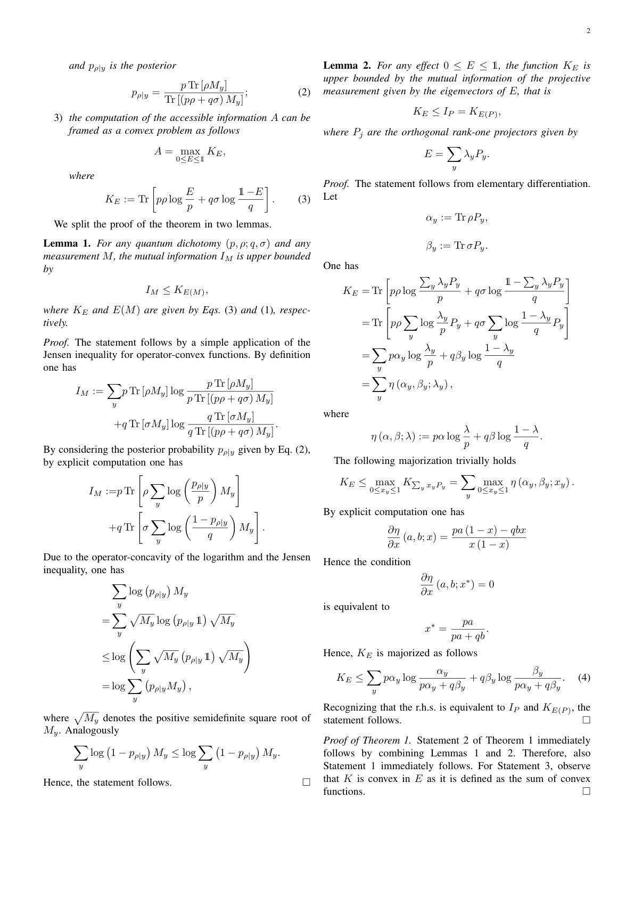
<figcaption class="paper-figure-caption"><b>Fig 1.</b> Low-resolution page preview, page 2</figcaption>
</figure>
<figure class="paper-figure-card">
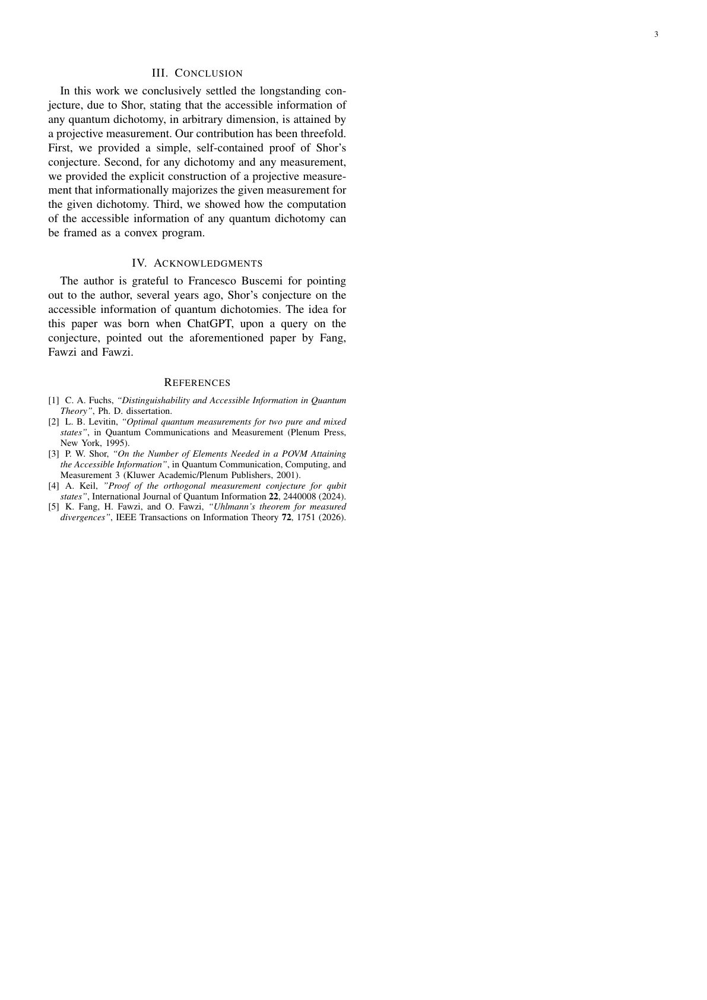
<figcaption class="paper-figure-caption"><b>Fig 2.</b> Low-resolution page preview, page 3</figcaption>
</figure>
</div>

<p><strong>Summary.</strong> This paper provides a complete and elementary proof of Shor's conjecture regarding the accessible information of quantum dichotomies. It demonstrates that this information is always attained by a simple projective measurement, regardless of the system's dimension. Furthermore, it shows that calculating this accessible information can be formulated as a convex optimization problem.</p>
<p><strong>Why it may be interesting.</strong> This work provides fundamental theoretical tools for quantifying information extraction in quantum systems, which is crucial for understanding the limits of quantum communication and measurement protocols.</p>
<details>
<summary>Detailed structure</summary>
<p><strong>Main problem.</strong> To conclusively prove Shor's conjecture, which posits that the accessible information of any quantum dichotomy (an ensemble of two states) is always achieved by a projective measurement.</p>
<p><strong>Main result.</strong> The conjecture is proven for arbitrary finite dimensions, showing that any measurement is informationally majorized by a projective measurement, and furthermore, the computation of accessible information for dichotomies can be framed as a convex optimization problem.</p>
<p><strong>Method.</strong> The proof utilizes elementary differentiation, the Jensen inequality for operator-convex functions, and reformulates the maximization problem into a convex optimization framework.</p>
<p><strong>Model / system.</strong> The study concerns quantum ensembles, specifically a quantum dichotomy $(p, 
ho; q, \sigma)$, where $
ho$ and $\sigma$ are quantum states prepared with probabilities $p$ and $q=1-p$. The analysis is performed in arbitrary finite-dimensional Hilbert spaces.</p>
<p><strong>Key observables.</strong> Accessible information ($A$), which quantifies the maximum extractable Shannon information, and the mutual information ($I_M$) associated with various measurements.</p>
<p><strong>Important parameters / regimes.</strong> The probabilities $p$ and $q=1-p$ defining the ensemble, and the quantum states $
ho$ and $\sigma$.</p>
<p><strong>Assumptions / limitations.</strong> The primary assumption is the definition of accessible information as the maximum mutual information over all possible quantum measurements (POVMs).</p>
<p><strong>Paper structure.</strong> The paper builds the argument by first establishing inequalities relating general measurements to projective measurements, culminating in the proof of Shor's conjecture and the convex formulation of the problem.</p>
</details>
<details>
<summary>Abstract</summary>
<p>The accessible information of any given quantum ensemble quantifies the maximum amount of Shannon information that can be extracted from the ensemble by any quantum measurement. Almost three decades ago, Shor conjectured that the accessible information of any quantum dichotomy, that is, an ensemble of two states, is attained by a projective measurement. Recently, a proof of this conjecture restricted to the qubit case was published by Keil. Here, we conclusively settle this longstanding open problem. First, we show that Shor's conjecture follows, in arbitrary dimension, from a recent result by Fang, Fawzi and Fawzi, and we provide a self-contained, elementary proof. Second, for any given dichotomy and measurement, we provide the explicit construction of a projective measurement that outperforms such a measurement in extracting information from the given dichotomy. Third, while the computation of the accessible information is known to be non-convex in general, we frame the computation of the accessible information of dihotomies as a convex problem.</p>
</details>
<p><sub><a href="#top">↑ back to top</a></sub></p>

<p><a id="paper-2609.19484"></a></p>
<h3 id="scalable-simulation-of-quantum-dynamics-on-topological-quantum-hardware"><a href="http://arxiv.org/abs/2609.19484v1">Scalable Simulation of Quantum Dynamics on Topological Quantum Hardware</a></h3>
<p><strong>Authors:</strong> Kritanjan Polley, Mark E. Tuckerman<br>
<strong>Type:</strong> theory · <strong>Category:</strong> quantum information and computing · <strong>PDF:</strong> <a href="https://arxiv.org/pdf/2609.19484v1">https://arxiv.org/pdf/2609.19484v1</a><br>
<strong>Analysis basis:</strong> full PDF text, analyzed in chunks
<strong>Topic relevance:</strong> <code>analog quantum simulation</code> <strong>3/5</strong></p>
<div class="figure-strip-hint">↔ Scroll figures horizontally</div>
<div class="paper-figures-scroll">
<figure class="paper-figure-card">
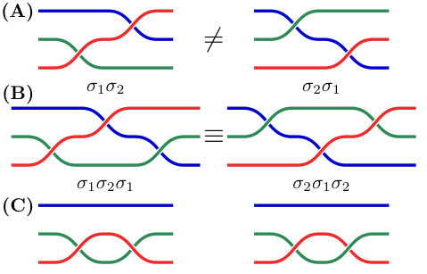
<figcaption class="paper-figure-caption"><b>Fig 1.</b> FIG. 1. Diagrammatic representation of the properties of the braid generators and braid operations. (A) shows the non-Abelian nature of the braid groups. (B) shows the Yang- Baxter relation (c.f. Eq. (A7)). (C) displays the counterclock- wise rotation for the braid generator σi’s that makes σ2 i ̸= I.</figcaption>
</figure>
<figure class="paper-figure-card">
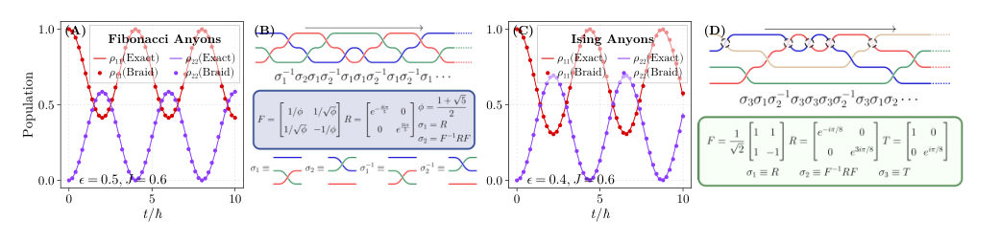
<figcaption class="paper-figure-caption"><b>Fig 2.</b> FIG. 2. Braiding sequences generated for a two-level system using the Solovay-Kitaev algorithm are employed to simulate the time propagation of the system. In panel (A), the exact propagation of population dynamics, obtained by directly exponentiating the Hamiltonian, is depicted with solid lines, while the result obtained from Fibonacci anyon braiding is shown with scattered dots. The first 10 elements of the Fibonacci braiding sequence are displayed above panel (B). Panel (B) also shows the matrix elements for the braiding operations and the individual braiding diagrams for 4 gates; σ1, σ2, and their inverses. Panel (C) presents the population dynamics of a similar Hamiltonian, where we...</figcaption>
</figure>
<figure class="paper-figure-card">
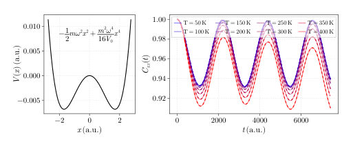
<figcaption class="paper-figure-caption"><b>Fig 3.</b> FIG. 3. The real part of the position autocorrelation function for a double well potential is displayed on the right. The shape of the potential is shown in the left. We used the parameters from Ref. 43, with ω = 500 cm−1, m = 1836 a.u., and V0 = 1500 cm−1. The position autocorrelation function is shown at different temperatures, with the solid line being the result from topological anyon braiding and dashed line being the exact result.</figcaption>
</figure>
<figure class="paper-figure-card">
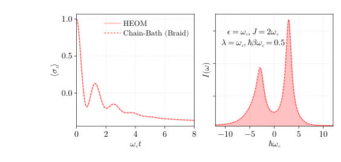
<figcaption class="paper-figure-caption"><b>Fig 4.</b> FIG. 4. Expectation value of σz for a spin Boson model is displayed on the left. The parameters are shown on the right panel. The solid light curve is the numerically exact hierarchical equations of motion (HEOM)48,49 result while the dashed line is the result obtained with topolog- ical braiding. A Lorentzian spectral density of the form, J(ω) = 2λωωc/(ω2 + ω2 c), was utilized to sample the bath frequencies and coupling constants where λ is the solvent re- organization energy and ωc is the peak frequency of the spec- tral density. The absorption spectra are plotted on the right, the shaded region being the HEOM result. For computing spectra, we added a dummy ground state (state 0), and...</figcaption>
</figure>
<figure class="paper-figure-card">
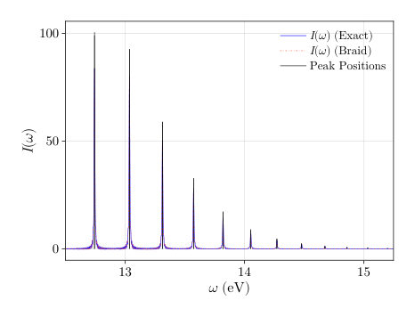
<figcaption class="paper-figure-caption"><b>Fig 5.</b> FIG. 5. Vibronic spectra for H2 molecule at T = 0 K for σ →π transition. The position of the peaks of the spectra is shown in the black vertical lines.</figcaption>
</figure>
</div>

<p><strong>Summary.</strong> This paper presents a comprehensive framework to simulate complex quantum dynamics for molecular and condensed matter physics using topological quantum hardware. It achieves this by mapping time evolution operators onto non-Abelian anyon braiding operations, utilizing the Solovay-Kitaev algorithm for high accuracy. The methodology proves scalable, offering a robust pathway for simulating strongly correlated and non-equilibrium quantum systems on fault-tolerant devices.</p>
<p><strong>Why it may be interesting.</strong> This work directly bridges the gap between theoretical quantum simulation needs (molecular/condensed matter dynamics) and the physical realization constraints of emerging quantum hardware (topological qubits).</p>
<details>
<summary>Detailed structure</summary>
<p><strong>Main problem.</strong> Establishing a scalable and robust framework for simulating quantum dynamics in molecular and condensed matter systems directly on topological quantum hardware.</p>
<p><strong>Main result.</strong> The framework successfully demonstrates the ability to approximate complex quantum dynamics, including molecular kinetics and spin-boson models, using non-Abelian anyon braiding.</p>
<p><strong>Method.</strong> The core method involves approximating unitary time propagators using the Solovay-Kitaev algorithm by simulating quantum gates via the braiding of Fibonacci and Ising anyons.</p>
<p><strong>Model / system.</strong> The work applies to a hierarchy of systems, including two-level systems, double-well potentials, spin-boson models, and molecular reaction kinetics, all mapped onto the physics of topological quantum hardware.</p>
<p><strong>Key observables.</strong> Position autocorrelation function, expectation value of sigma_z, vibronic spectra, and reaction rates (k(T)).</p>
<p><strong>Important parameters / regimes.</strong> Topological anyon types (Fibonacci, Ising), target accuracy (infidelity), and system parameters like coupling strengths (J, epsilon).</p>
<p><strong>Assumptions / limitations.</strong> The fidelity of the simulation relies on the accuracy of the Solovay-Kitaev approximation and the underlying assumption of fault-tolerant topological gate operations.</p>
<p><strong>Figures summary.</strong> Figures compare exact dynamics (solid lines) against results from topological braiding (scattered dots/dashed lines) for various systems, showing high fidelity across different physical regimes.</p>
<p><strong>Paper structure.</strong> The paper develops a theoretical framework, starting with simple models (two-level systems) to demonstrate the core methodology (anyon braiding via SK algorithm), and then scales this approach up to complex condensed matter and molecular physics problems.</p>
</details>
<details>
<summary>Abstract</summary>
<p>Quantum computers offer a significant advantage in simulating quantum systems compared to classical computers for certain problems, although most current applications are limited to calculating static molecular properties using hybrid quantum-classical hardware. In this work, we establish a framework for the representation of quantum dynamics in molecular and condensed matter systems, designed for execution on topological quantum hardware. By leveraging the non-Abelian braiding statistics of Fibonacci and Ising anyons, we utilize the Solovay-Kitaev algorithm to approximate unitary propagators for a range of systems. We demonstrate the efficacy of these algorithms across a hierarchy of complexity, from two-level systems and one dimensional double-well potentials to condensed phase spin-boson models, simple molecules, and molecular reaction kinetics. These algorithms provide a scalable and robust pathway for simulating many-body condensed phase chemical physics on fault-tolerant quantum devices.</p>
</details>
<p><sub><a href="#top">↑ back to top</a></sub></p>

<p><a id="paper-2609.20542"></a></p>
<h3 id="technical-report-ofdm-assisted-simultaneous-quantum-and-classical-thz-communications"><a href="http://arxiv.org/abs/2609.20542v1">Technical Report OFDM-Assisted Simultaneous Quantum and Classical THz Communications</a></h3>
<p><strong>Authors:</strong> Xin Liu, Chao Xu, Soon Xin Ng, Mohammed El-Hajjar, Phuc V. Trinh, Shinya Sugiura, Lajos Hanzo<br>
<strong>Type:</strong> theory · <strong>Category:</strong> quantum information and computing · <strong>PDF:</strong> <a href="https://arxiv.org/pdf/2609.20542v1">https://arxiv.org/pdf/2609.20542v1</a><br>
<strong>Analysis basis:</strong> full PDF text, analyzed in chunks
<strong>Topic relevance:</strong> <code>interference shaping light</code> <strong>3/5</strong></p>
<div class="figure-strip-hint">↔ Scroll figures horizontally</div>
<div class="paper-figures-scroll">
<figure class="paper-figure-card">
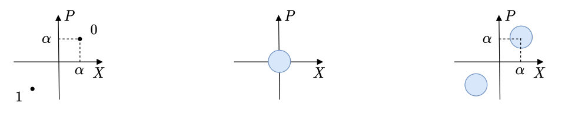
<figcaption class="paper-figure-caption"><b>Fig 1.</b> Fig. 1: Phase-space representations of various communication/quantum modulation schemes: (a) Classical BPSK scheme; (b) GM QKD scheme; (c) SQCC scheme.</figcaption>
</figure>
<figure class="paper-figure-card">
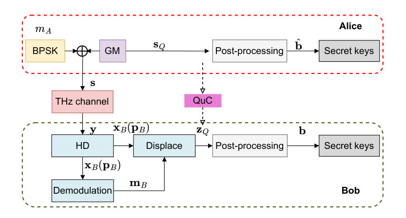
<figcaption class="paper-figure-caption"><b>Fig 2.</b> Fig. 2: SC based SQCC protocol diagram in THz transmission, where the reconciliation post- processing is detailed in [27]. GM: Gaussian modulation; HD: homodyne detection.</figcaption>
</figure>
<figure class="paper-figure-card">
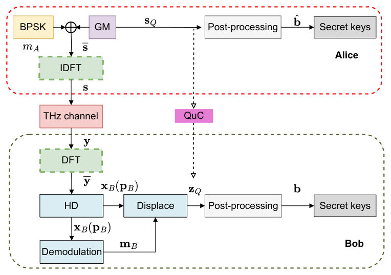
<figcaption class="paper-figure-caption"><b>Fig 3.</b> Fig. 3: OFDM based SQCC protocol diagram in THz transmission, where the reconciliation post- processing is detailed in [27].</figcaption>
</figure>
<figure class="paper-figure-card">
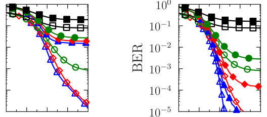
<figcaption class="paper-figure-caption"><b>Fig 4.</b> Fig. 4: BER comparisons for classical communications of OFDM and SC based SQCC systems using different power sharing ratios with 4 × 4 MIMO dimensions, where (a) K = 0 dB and (b) K = 10 dB.</figcaption>
</figure>
<figure class="paper-figure-card">
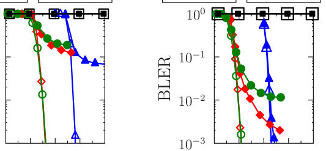
<figcaption class="paper-figure-caption"><b>Fig 5.</b> Fig. 5: BLER comparisons for quantum communications of OFDM and SC based SQCC systems using different power sharing ratios with 4 × 4 MIMO dimensions, where (a) K = 0 dB and (b) K = 10 dB.</figcaption>
</figure>
</div>

<p><strong>Summary.</strong> This paper proposes an OFDM-based system for Simultaneous Quantum and Classical Communication (SQCC) in challenging THz frequency-selective fading channels. By processing signals in the frequency domain, the OFDM scheme maintains a practical Secret Key Rate across various power allocations. This significantly improves performance compared to single-carrier methods, making THz quantum communication more viable.</p>
<p><strong>Why it may be interesting.</strong> This work directly addresses quantum communication in a high-frequency, complex channel regime (THz), which is a major frontier in quantum optics and quantum networks, requiring advanced signal processing techniques like OFDM.</p>
<details>
<summary>Detailed structure</summary>
<p><strong>Main problem.</strong> The paper investigates the feasibility of cost-effective Simultaneous Quantum and Classical Communication (SQCC) in realistic, frequency-selective multipath Terahertz (THz) fading channels.</p>
<p><strong>Main result.</strong> The proposed Orthogonal Frequency Division Multiplexing (OFDM) based SQCC scheme achieves a practical Secret Key Rate (SKR) over various power sharing scenarios, significantly outperforming its single-carrier counterpart.</p>
<p><strong>Method.</strong> The authors propose an OFDM-based protocol that superimposes classical and quantum signals in the frequency domain, utilizing LDPC coded reconciliation schemes.</p>
<p><strong>Model / system.</strong> The system operates in the THz band, modeling the channel as frequency-selective multipath fading. The protocol involves superimposing classical BPSK signals with Gaussian Modulated (GM) CV-QKD signals.</p>
<p><strong>Key observables.</strong> Secret Key Rate (SKR), Bit Error Rate (BER), and Block Error Rate (BLER).</p>
<p><strong>Important parameters / regimes.</strong> Power sharing ratio ($\zeta = P_Q/P_C$), Ricean factor ($K$), and the channel fading characteristics (frequency-selective).</p>
<p><strong>Assumptions / limitations.</strong> The investigation focuses on multipath-induced channel dispersion, treating beamforming as a link-enabling mechanism, and using LDPC CV-QKD reconciliation.</p>
<p><strong>Figures summary.</strong> Figures illustrate phase-space representations of the signals, protocol diagrams for SC and OFDM approaches, and plots showing SKR vs. distance, and BLER vs. power sharing ratio ($\zeta$).</p>
<p><strong>Paper structure.</strong> The paper develops the SQCC protocol by first establishing the time-domain (SC) approach, then extending it to the frequency-domain using OFDM, and finally analyzing the performance metrics like SKR and BLER under varying power sharing ratios.</p>
</details>
<details>
<summary>Abstract</summary>
<p>The feasibility of cost-effective simultaneous quantum and classical communication (SQCC) transmitting both the quantum key and classical information via a superimposed coherent state is investigated both in optical and Terahertz (THz) bands. Since the existing THz SQCC schemes assume single-carrier (SC) transmission over flat fading channels, we embark on investigating SQCC in realistic frequency-selective multipath THz fading channels. We then propose an orthogonal frequency division multiplexing (OFDM) based SQCC system for time-invariant frequency-selective THz scenarios, supported by low-density parity-check coded (LDPC) multidimensional QKD reconciliation schemes. Our simulation results demonstrate that the OFDM-based SQCC scheme is capable of achieving a practical secret key rate (SKR) over a wide range of power sharing scenarios between the classical and quantum signals. By contrast its single-carrier counterpart requires the classical signal to be at least 100 times stronger than the quantum signal in THz SQCC.</p>
</details>
<p><sub><a href="#top">↑ back to top</a></sub></p>

<p><a id="paper-2609.20487"></a></p>
<h3 id="unified-hydrodynamics-for-density-and-spin-supersolids"><a href="http://arxiv.org/abs/2609.20487v1">Unified hydrodynamics for density and spin supersolids</a></h3>
<p><strong>Authors:</strong> Ashwath N. Madhusudan, Au-Chen Lee, P. B. Blakie, R. N. Bisset<br>
<strong>Type:</strong> theory · <strong>Category:</strong> quantum gases · <strong>PDF:</strong> <a href="https://arxiv.org/pdf/2609.20487v1">https://arxiv.org/pdf/2609.20487v1</a><br>
<strong>Analysis basis:</strong> full PDF text, analyzed in chunks
<strong>Topic relevance:</strong> <code>analog quantum simulation</code> <strong>3/5</strong></p>
<div class="figure-strip-hint">↔ Scroll figures horizontally</div>
<div class="paper-figures-scroll">
<figure class="paper-figure-card">
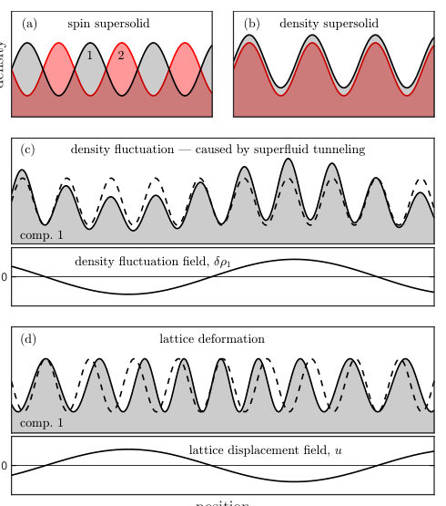
<figcaption class="paper-figure-caption"><b>Fig 1.</b> FIG. 1. Spin- and density-supersolid schematics and hydro- dynamic fields. (a) Spin-supersolid; component 1 (black) and component 2 (red) are modulated out of phase. (b) Density- supersolid; components are modulated in phase. (c) Density fluctuation (upper) and the corresponding slowly varying hy- drodynamic field (lower); dashed curves denote ground-state density. (d) Lattice deformation (upper) and the associated displacement field (lower). We only plot component 1 in (c) and (d) for clarity.</figcaption>
</figure>
<figure class="paper-figure-card">
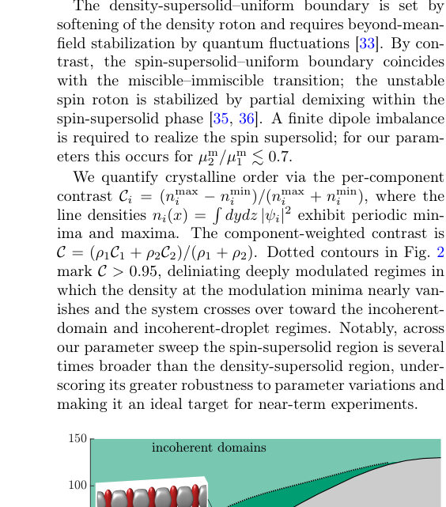
<figcaption class="paper-figure-caption"><b>Fig 2.</b> Fig. 4</figcaption>
</figure>
<figure class="paper-figure-card">
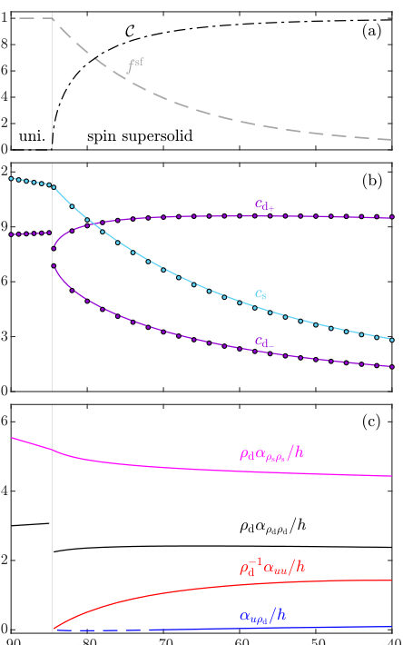
<figcaption class="paper-figure-caption"><b>Fig 3.</b> FIG. 3. Balanced spin-supersolid: superfluidity, sound and elasticity. Hydrodynamic predictions for a balanced mix- ture along the spin-supersolid cut (µm 2 /µm 1 = −1). (a) Component-weighted contrast (dot-dashed) and superfluid fraction (dashed). (b) Sound speeds from hydrodynamics (solid) and BdG (markers), agreeing to ≲1%. Density (spin) modes are shown as purple (cyan), with a spin–density cross- ing occuring near a12/a0 ≈−80 without hybridization. (c) Elastic coefficients, with negative values dashed. Parameters as in Fig. 2.</figcaption>
</figure>
<figure class="paper-figure-card">
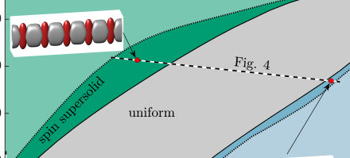
<figcaption class="paper-figure-caption"><b>Fig 4.</b> Fig. 3</figcaption>
</figure>
<figure class="paper-figure-card">
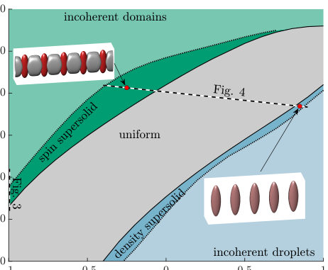
<figcaption class="paper-figure-caption"><b>Fig 5.</b> FIG. 2. Phase diagram showing spin- (green) and density- supersolid (blue) ground state regions as a function of relative dipole moment (horizontal axis) and interspecies scattering length (vertical axis). Solid lines denote phase transitions; dotted lines mark where the component-weighted modulation contrast is C = 0.95 (see main text). Inset: isosurfaces at 30 % of peak densities for component 1 (red) and component 2 (gray). Striped lines indicate the parameter cuts analyzed in Figs. 3 and 4. Parameters: a11 = a22 ≡130a0, µm 1 ≡9.93µB, with µm 2 varied.</figcaption>
</figure>
</div>

<p><strong>Summary.</strong> This paper develops a unified hydrodynamic theory for two-component supersolids, modeling systems like dipolar Bose-Einstein condensates. By deriving equations of motion from symmetry and conservation laws, the authors predict the collective excitation spectrum, including sound speeds. The theory is rigorously benchmarked against microscopic calculations, confirming its quantitative accuracy across the spin- and density-supersolid phases.</p>
<p><strong>Why it may be interesting.</strong> This work provides a powerful, unified theoretical framework connecting macroscopic hydrodynamic measurements (like sound speed) directly to microscopic parameters (like dipolar interactions and superfluid fractions) in complex quantum matter states.</p>
<details>
<summary>Detailed structure</summary>
<p><strong>Main problem.</strong> To formulate a general hydrodynamic theory describing the collective dynamics of multicomponent supersolids, which exhibit both density and spin modulations.</p>
<p><strong>Main result.</strong> The hydrodynamic predictions for sound speeds quantitatively agree with microscopic Bogoliubov–de Gennes calculations across the entire phase diagram, confirming the theory's validity.</p>
<p><strong>Method.</strong> The theory is derived from symmetry and conservation laws, leading to Euler-Lagrange equations whose normal-mode solutions are used to calculate sound speeds and elastic coefficients.</p>
<p><strong>Model / system.</strong> The system is a binary dipolar Bose-Einstein condensate (or quantum gas mixture) confined to 1D, exhibiting supersolid phases characterized by density and spin modulations.</p>
<p><strong>Key observables.</strong> Sound speeds of the three Goldstone branches ($c_{s}, c_{d\pm}$), superfluid fraction ($f_{sf}$), and elastic coefficients ($\alpha_{d
ho d
ho}$, $\alpha_{s
ho s
ho}$).</p>
<p><strong>Important parameters / regimes.</strong> Relative dipole moment ($\mu_{m2}/\mu_{m1}$), interspecies scattering length ($a_{12}$), and the component imbalance.</p>
<p><strong>Assumptions / limitations.</strong> The analysis relies on the long-wavelength limit ($\omega = cq$) and utilizes the symmetric-mixture approximation for the quantum-fluctuation energy density ($\epsilon_{QF}$).</p>
<p><strong>Figures summary.</strong> Figures illustrate the phase diagram showing spin- and density-supersolid regions, and provide hydrodynamic predictions for sound and elasticity along specific cuts (balanced and imbalanced).</p>
<p><strong>Paper structure.</strong> The paper systematically derives the Lagrangian and Euler-Lagrange equations for the hydrodynamic fields, analyzes the resulting dynamical matrix in different limits (imbalanced, balanced spin, symmetric density), and compares the resulting dispersion relations against microscopic BdG calculations.</p>
</details>
<details>
<summary>Abstract</summary>
<p>Two-component supersolids can exhibit in-phase or out-of-phase component density modulations, corresponding to density and spin supersolids, respectively. We formulate a general hydrodynamic theory for the collective dynamics of multicomponent supersolids, guided by their broken symmetries and conservation laws. We benchmark it against microscopic calculations for a binary dipolar condensate confined to an infinite tube, finding quantitative agreement for the sound speeds of all three Goldstone branches throughout the density- and spin-supersolid regions. The resulting relations link collective-mode measurements to elastic coefficients and superfluid fractions.</p>
</details>
<p><sub><a href="#top">↑ back to top</a></sub></p>

<p><a id="paper-2609.19572"></a></p>
<h3 id="universality-of-the-math451math-magnetization-plateau-and-quantum-disordered-states-in-the-kagome-family-math452math-math453math-math454math"><a href="http://arxiv.org/abs/2609.19572v1">Universality of the $1/9$ Magnetization Plateau and Quantum-Disordered States in the Kagome Family $\mathrm{Cs_8AB_3Ti_{12}F_{48}}$ ($A=\mathrm{Rb},\mathrm{Li}$; $B=\mathrm{K},\mathrm{Na}$)</a></h3>
<p><strong>Authors:</strong> Prena Chaudhary, Asiri Thennakoon, Tommy Park, Hanru Wang, Leshan Zhao, Laurel Winter, Neil Herrison, Christina Hoffmann, Junghong H. He, Harald O. Jeschke, Hiroyuki Nojiri, Akira Matsuo, Koichi Kindo, Miwako Takahashi, Yukio Noda, Taku J. Sato, Shiyan Li, Hiroaki Ueda, Gia-Wei Chern, Seung-Hun Lee<br>
<strong>Type:</strong> both · <strong>Category:</strong> strongly correlated electrons · <strong>PDF:</strong> <a href="https://arxiv.org/pdf/2609.19572v1">https://arxiv.org/pdf/2609.19572v1</a><br>
<strong>Analysis basis:</strong> full PDF text, analyzed in chunks
<strong>Topic relevance:</strong> <code>analog quantum simulation</code> <strong>3/5</strong></p>
<div class="figure-strip-hint">↔ Scroll figures horizontally</div>
<div class="paper-figures-scroll">
<figure class="paper-figure-card">
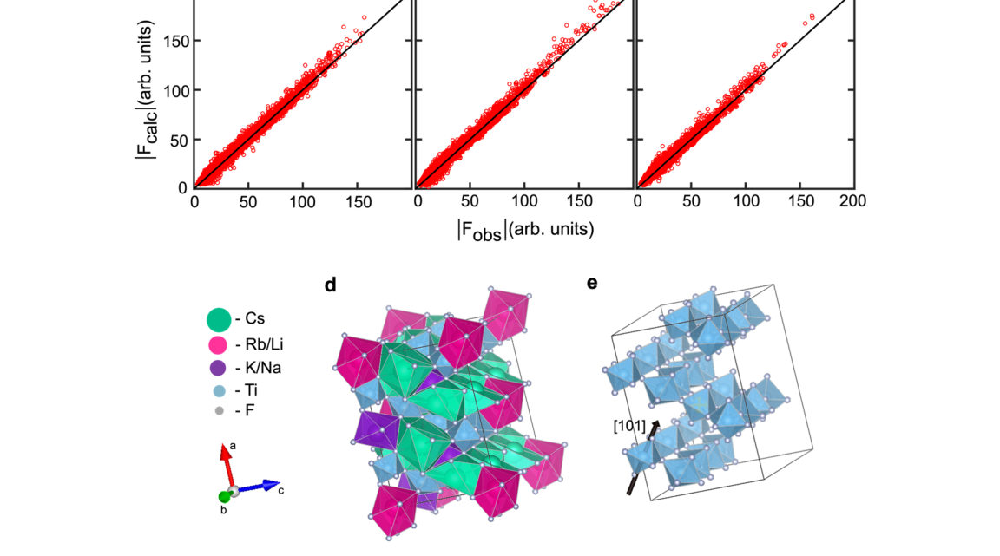
<figcaption class="paper-figure-caption"><b>Fig 1.</b> Fig. 1 | Structural refinements and representative crystal structure of the Cs8AB3Ti12F48 family. a-c, Comparison of observed and calculated structure-factor amplitudes, |Fcalc| and |Fobs|, obtained from refinements of single-crystal neutron diffraction data collected at 300 K for a, Cs8LiNa3Ti12F48, b, Cs8RbK3Ti12F48, and c, Cs8LiK3Ti12F48. The solid black line in each panel indicates ideal agreement, |Fcalc| = |Fobs|. d, Polyhedral representation of the refined monoclinic crystal structure, showing the alkali-metal sublattices and TiF6 octahedra. Cs, A-site (Rb/Li), B- site (K/Na), Ti, and F atoms are shown in green, magenta, purple, light blue, and gray, respectively. e, Ti-F framework...</figcaption>
</figure>
<figure class="paper-figure-card">
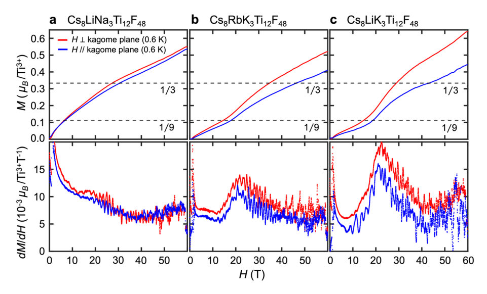
<figcaption class="paper-figure-caption"><b>Fig 2.</b> Fig. 2 | Field-dependent magnetization and its field derivative for the Cs8AB3Ti12F48 family. Field-dependent magnetization M(H) (top panels) and corresponding derivatives dM/dH (bottom panels) measured at a base temperature of 0.6 K for a, Cs8LiNa3Ti12F48, b, Cs8RbK3Ti12F48, and c, Cs8LiK3Ti12F48. Data are shown for magnetic fields applied perpendicular to the kagome plane (H ⊥ kagome plane, red lines) and within the kagome plane (H || kagome plane, blue lines). The dashed horizontal lines in the top panels indicate the 1/9 and 1/3 fractional magnetization levels. Plateau-like features are absent in the structurally compressed LiNa compound, whereas pronounced 1/9 plateau-like phases...</figcaption>
</figure>
<figure class="paper-figure-card">
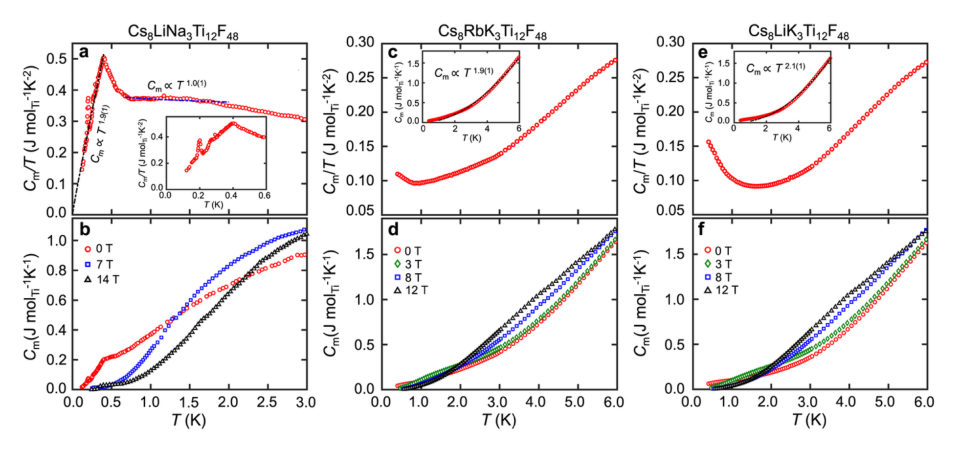
<figcaption class="paper-figure-caption"><b>Fig 3.</b> Fig. 3 | Low-temperature magnetic specific heat of the Cs8AB3Ti12F48 family. a, Zero-field magnetic specific-heat coefficient, (&amp;/I, of Cs8LiNa3Ti12F48. The black and blue lines show fits to (&amp; ∝I!.((!) in the low-temperature region and (&amp; ∝I!.+(!) above the low-temperature anomalies, respectively. The inset highlights the low-temperature anomalies. b, Temperature dependence of (&amp; for Cs8LiNa3Ti12F48 measured at 0, 7, and 14 T. c, Zero-field (&amp;/I of Cs8RbK3Ti12F48. The inset shows (&amp; together with a power-law fit, (&amp; ∝I!.((!). d, Temperature dependence of (&amp; for Cs8RbK3Ti12F48 measured at 0, 3, 8, and 12 T. e, Zero-field (&amp;/I of Cs8LiK3Ti12F48. The inset shows (&amp; together with a power-law...</figcaption>
</figure>
<figure class="paper-figure-card">
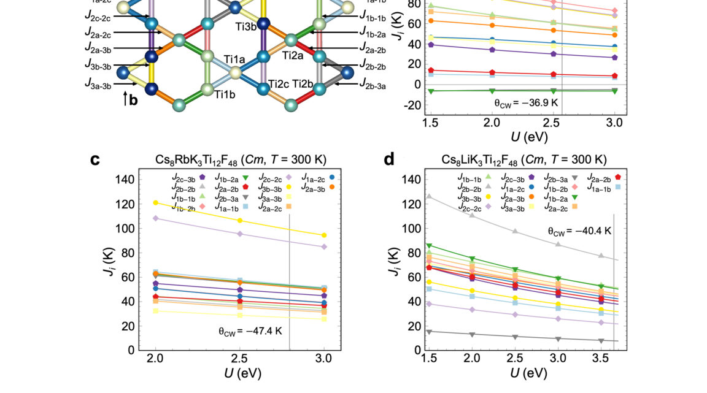
<figcaption class="paper-figure-caption"><b>Fig 4.</b> Fig. 4 | DFT-derived nearest-neighbor exchange interactions and exchange networks of the Cs8AB3Ti12F48 family. a, Common nearest-neighbor exchange network of the Cs8AB3Ti12F48 family, showing the 14 symmetry-inequivalent exchange pathways and their division into A and B exchange subsystems. Both subsystems extend along the crystallographic b direction and provide the structural basis for the chain-A and chain-B magnetic subsystems that become weakly coupled and quasi-one-dimensional in Cs8LiNa3Ti12F48. b-d, Fourteen symmetry-inequivalent nearest-neighbor exchange interactions calculated as a function of the on-site Coulomb interaction U using the 300 K Cm crystal structures of b,...</figcaption>
</figure>
</div>

<p><strong>Summary.</strong> This study investigates how structural tuning, achieved by chemical pressure in the Kagome material Cs_8AB_3Ti_12F_48, affects magnetic ordering. By comparing expanded and compressed compounds, the researchers found that the 1/9 magnetization plateau persists robustly in expanded systems, suggesting it is a fundamental feature of frustrated kagome magnetism, independent of the more common 1/3 plateau.</p>
<p><strong>Why it may be interesting.</strong> The work provides a detailed experimental and computational study of geometric frustration in a solid-state magnetic system, directly addressing the emergence of fractional magnetization plateaus, which is central to understanding quantum magnetic ground states.</p>
<details>
<summary>Detailed structure</summary>
<p><strong>Main problem.</strong> The study aims to resolve the microscopic origin and universality of the low-field 1/9 magnetization plateau in spin-1/2 kagome antiferromagnets.</p>
<p><strong>Main result.</strong> The 1/9 plateau is robustly observed in expanded compounds even when the conventional 1/3 plateau is absent, suggesting the 1/9 feature may be a more universal characteristic of frustrated kagome magnetism.</p>
<p><strong>Method.</strong> The research combines high-field magnetization measurements, specific-heat measurements, and first-principles DFT calculations, supplemented by structural refinement using neutron and X-ray diffraction.</p>
<p><strong>Model / system.</strong> The physical system is the Kagome family of compounds, Cs_8AB_3Ti_12F_48, which are spin-1/2 antiferromagnets whose magnetic interactions are modeled by a Heisenberg Hamiltonian.</p>
<p><strong>Key observables.</strong> Magnetization plateaus (1/9 and 1/3), specific heat anomalies, and derived magnetic exchange constants (J_i).</p>
<p><strong>Important parameters / regimes.</strong> Chemical pressure tuning via alkali ion substitution (lattice expansion vs. compression) and high magnetic fields up to 60 T.</p>
<p><strong>Assumptions / limitations.</strong> The analysis assumes that structural changes (compression/expansion) directly modify the magnetic exchange network, and that the magnetic behavior can be mapped onto a Heisenberg model.</p>
<p><strong>Figures summary.</strong> Figures show structural refinements and polyhedral representations; magnetization curves illustrate the emergence of the 1/9 plateau in expanded samples; specific heat data contrast the behavior of compressed versus expanded compounds.</p>
<p><strong>Paper structure.</strong> The paper progresses by first establishing the structural basis via joint X-ray/neutron refinement, then using DFT to map exchange interactions, and finally presenting high-field magnetization and specific heat measurements to correlate structural tuning with the magnetic plateau phases.</p>
</details>
<details>
<summary>Abstract</summary>
<p>The microscopic origin of the low-field $1/9$ magnetization plateau in spin-$1/2$ kagome antiferromagnets remains unresolved. Here, we show that chemical pressure reshapes the hierarchy of fractional magnetization plateaus in the titanium-based kagome family $\mathrm{Cs_8AB_3Ti_{12}F_{48}}$ ($A=\mathrm{Rb},\mathrm{Li}$; $B=\mathrm{K},\mathrm{Na}$). High-field magnetization measurements up to 60 T reveal a robust $1/9$ plateau-like phase in the expanded $\mathrm{Cs_8RbK_3Ti_{12}F_{48}}$ and $\mathrm{Cs_8LiK_3Ti_{12}F_{48}}$ compounds, despite the absence of the conventionally more robust $1/3$ plateau. In contrast, compressed $\mathrm{Cs_8LiNa_3Ti_{12}F_{48}}$ exhibits neither the $1/9$ plateau-like phase nor a quantum-disordered ground state. Specific-heat measurements and first-principles calculations show that lattice expansion preserves a frustrated, fully connected kagome exchange network and gapless quantum-disordered ground states, whereas compression reorganizes the exchange network into weakly coupled quasi-one-dimensional subsystems and induces successive magnetic transitions. These results demonstrate that the $1/9$ and $1/3$ plateaus need not share a common microscopic origin and suggest that the $1/9$ plateau may represent a more universal feature of frustrated spin-$1/2$ kagome magnetism.</p>
</details>
<p><sub><a href="#top">↑ back to top</a></sub></p>

<p><a id="paper-2609.19575"></a></p>
<h3 id="vehicle-routing-clustering-by-sparse-quantum-relaxation"><a href="http://arxiv.org/abs/2609.19575v1">Vehicle-Routing Clustering by Sparse Quantum Relaxation</a></h3>
<p><strong>Authors:</strong> Farzan Moosavi, Bilal Farooq<br>
<strong>Type:</strong> both · <strong>Category:</strong> quantum information and computing · <strong>PDF:</strong> <a href="https://arxiv.org/pdf/2609.19575v1">https://arxiv.org/pdf/2609.19575v1</a><br>
<strong>Analysis basis:</strong> full PDF text, analyzed in chunks
<strong>Topic relevance:</strong> <code>QC/QI experiment</code> <strong>3/5</strong></p>
<div class="figure-strip-hint">↔ Scroll figures horizontally</div>
<div class="paper-figures-scroll">
<figure class="paper-figure-card">
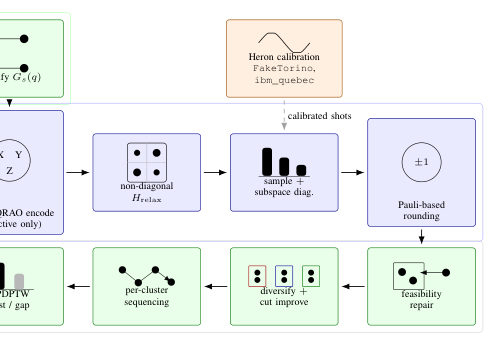
<figcaption class="paper-figure-caption"><b>Fig 1.</b> Fig. 1. Sparse QRAO pipeline with two-phase repair.</figcaption>
</figure>
<figure class="paper-figure-card">
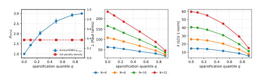
<figcaption class="paper-figure-caption"><b>Fig 2.</b> Fig. 2. Encoding resources versus sparsification level. Left: binary/HOBO compression recovers as the objective graph is sparsified, while full penalty encoding keeps interaction density pinned. Middle/right: Pauli-term count L and LCU norm λ both drop with the quantile q. Statistics use N ∈ {6, 8, 10, 12} and eight seeds.</figcaption>
</figure>
<figure class="paper-figure-card">
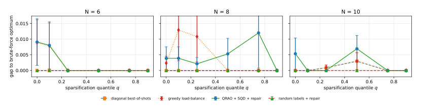
<figcaption class="paper-figure-caption"><b>Fig 3.</b> Fig. 3. Method comparison under full two-phase repair, N ∈{6, 8, 10}, mean ± SE over eight seeds with brute-force oracle gaps. Random-labels and diagonal best-of-shots overlap at gap ≈0. QRAO+SQD+repair can sit slightly above them because Pauli rounding often starts from a collapsed assignment and deterministic local repair can settle in a worse basin than repair from random labels. This near-zero collapse is expected, so the non-diagonal contribution is measured in the feasibility-only decoder ablation. N = 12 is omitted from the panel for space; the decoder ablation in the text covers it.</figcaption>
</figure>
<figure class="paper-figure-card">
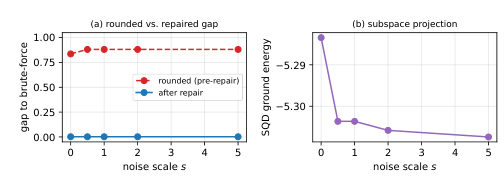
<figcaption class="paper-figure-caption"><b>Fig 4.</b> Fig. 4. Noise disambiguation at N = 8, K = 3, 8 seeds. (a) Rounded gap stays near 0.88 because Pauli rounding collapses to one cluster, while repaired gap is near zero. (b) SQD ground energy varies by less than 0.03 (−5.28→−5.31) across s∈{0, . . . , 5}; the small visual changes are within seed-level variation.</figcaption>
</figure>
</div>

<p><strong>Summary.</strong> This paper applies quantum optimization (QRAO) to the complex Vehicle-Routing Clustering problem, decomposing it into a cluster-assignment layer. It analyzes the trade-off between graph sparsity and quantum compression, showing that while quantum methods are employed, the final success hinges on a robust classical repair mechanism, leading to near-optimal results on current hardware.</p>
<p><strong>Why it may be interesting.</strong> The work provides a detailed, practical study of applying quantum optimization techniques to complex combinatorial problems, offering empirical benchmarks on near-term quantum hardware regarding resource scaling and error mitigation.</p>
<details>
<summary>Detailed structure</summary>
<p><strong>Main problem.</strong> The paper tackles the cluster-assignment layer of the Capacitated Pickup-and-Delivery Problem with Time Windows (CPDPTW), aiming to solve it using quantum optimization techniques.</p>
<p><strong>Main result.</strong> The authors demonstrate that while QRAO provides necessary non-diagonality, the dense nature of the conflict graph poses a major obstruction, and the classical repair mechanism is crucial for achieving near-optimal solutions.</p>
<p><strong>Method.</strong> The approach uses a cluster-first-route-second decomposition, employing Quantum Random Access Optimization (QRAO) on a sparsified objective Hamiltonian, followed by a two-phase classical repair procedure.</p>
<p><strong>Model / system.</strong> The problem is modeled via a weighted conflict graph derived from time-window incompatibilities. The quantum computation is implemented using QRAO encoding binary variables via non-commuting QRAC observables on quantum hardware simulators (Qiskit Aer, calibrated FakeTorino, IBM Heron).</p>
<p><strong>Key observables.</strong> Mean gap (0.0016), mean device-vs-ideal Total Variation Distance (TVD) (0.279), compression ratio (rho_comp), LCU 1-norm, and final routing quality.</p>
<p><strong>Important parameters / regimes.</strong> Sparsification level (q), number of request pairs (4 to 12), Krylov dimension (r), and noise scale (s).</p>
<p><strong>Assumptions / limitations.</strong> The authors explicitly state they make no quantum-advantage claim, relying heavily on a classical 'repair after rounding' step to enforce feasibility.</p>
<p><strong>Figures summary.</strong> The notes reference a regime map linking various quantum parameters to routing quality, and show hardware performance metrics (Table I) and the efficacy of the repair step (Figure 3, Figure 4).</p>
<p><strong>Paper structure.</strong> The paper first establishes the necessity of decomposition and the failure of diagonal methods (SQD). It then introduces QRAO for non-diagonality, details the sparsification/compression trade-off, and finally presents the full pipeline including two-phase repair and hardware benchmarking.</p>
</details>
<details>
<summary>Abstract</summary>
<p>This paper studies the cluster-assignment layer of a cluster-first-route-second decomposition for the capacitated pickup-and-delivery problem with time windows (CPDPTW), instead of a direct route-ordering quadratic unconstrained binary optimization (QUBO). Sample-based subspace diagonalization (SQD) degenerates to best-of-shots for any diagonal optimization Hamiltonian, so a useful transfer to routing requires non-diagonal relaxation. Quantum random access optimization (QRAO) provides this non-diagonality by encoding binary variables through non-commuting quantum random access code (QRAC) observables. CPDPTW-derived conflict graphs expose a routing-specific obstruction because dense objectives and penalty-encoded constraints destroy QRAO compression. We keep the Hamiltonian sparse by encoding only the sparsified objective and enforcing one-hot, capacity, and cluster time-budget feasibility by repair after rounding. We make no quantum-advantage claim. Under strong repair the classical pass alone reaches near-optimal cost at the tested sizes. The result is a regime map linking sparsification, achieved compression, linear-combination-of-unitaries (LCU) 1-norm, heavy-hex two-qubit depth, sampling drift, and final routing quality on Qiskit Aer, calibrated FakeTorino, and IBM Heron ibm_quebec. Across a 108-row ideal-calibrated-hardware evaluation grid spanning four to twelve pickup-delivery request pairs, the hardware slice has mean gap 0.0016 and mean device-vs-ideal total variation distance (TVD) 0.279; a decoder ablation at sizes six through twelve isolates the non-diagonal signal.</p>
</details>
<p><sub><a href="#top">↑ back to top</a></sub></p>

<p><a id="paper-2609.20142"></a></p>
<h3 id="higher-order-interactions-in-complex-systems-mechanisms-behaviour-representation-and-reducibility"><a href="http://arxiv.org/abs/2609.20142v1">Higher-Order Interactions in Complex Systems: Mechanisms, Behaviour, Representation and Reducibility</a></h3>
<p><strong>Authors:</strong> Francisco J. Pérez-Reche<br>
<strong>Type:</strong> theory · <strong>Category:</strong> statistical mechanics · <strong>PDF:</strong> <a href="https://arxiv.org/pdf/2609.20142v1">https://arxiv.org/pdf/2609.20142v1</a><br>
<strong>Analysis basis:</strong> full PDF text, analyzed in chunks
<strong>Topic relevance:</strong> <code>analog quantum simulation</code> <strong>2/5</strong> · <code>Keldysh / 2PI / non-Gaussian methods</code> <strong>1/5</strong> · <code>correlated / nonlocal dissipation</code> <strong>1/5</strong> · <code>driven-dissipative phase transition</code> <strong>1/5</strong> · <code>methods for driven-dissipative</code> <strong>1/5</strong> · <code>non-equilibrium universality</code> <strong>1/5</strong> · <code>quantum measurements</code> <strong>1/5</strong></p>
<div class="figure-strip-hint">↔ Scroll figures horizontally</div>
<div class="paper-figures-scroll">
<figure class="paper-figure-card">
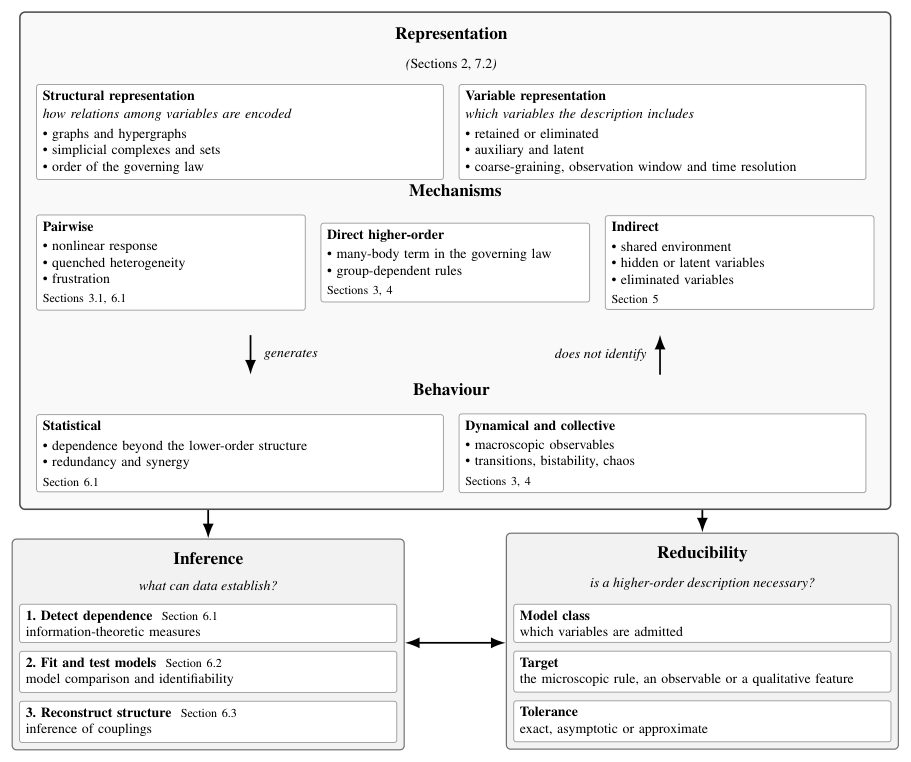
<figcaption class="paper-figure-caption"><b>Fig 1.</b> Figure 1: Conceptual structure of the review. Higher-order behaviour or dependence can arise from a pairwise mechanism, a direct many-body mechanism, or an indirect mechanism acting through a shared environment, a latent variable or a variable that has been eliminated from the description. Any such mechanism, and the behaviour it generates, is expressed within a representation, comprising the structural representation, how the relations among variables are encoded, and the variable representation, which variables the description includes. Because distinct mechanisms can generate overlapping behaviour, the mapping from mechanisms to behaviours is not one-to-one. Accordingly, an observed...</figcaption>
</figure>
</div>

<p><strong>Summary.</strong> This review provides a comprehensive theoretical framework for analyzing higher-order interactions in complex systems, separating the concepts of mechanism, observable behavior, and mathematical representation. It argues that these three aspects are not equivalent, demonstrating that observed collective phenomena can arise from multiple underlying physical causes. The work establishes formal criteria for determining when a complex, high-order model can be accurately simplified or reduced to a lower-order description.</p>
<p><strong>Why it may be interesting.</strong> Although focused on classical statistical mechanics, the rigorous framework for distinguishing mechanism from observation, and the formal treatment of reducibility, provides powerful conceptual tools applicable to open quantum systems where distinguishing between true quantum correlations and classical approximations is paramount.</p>
<details>
<summary>Detailed structure</summary>
<p><strong>Main problem.</strong> The paper aims to develop a unified framework for understanding higher-order interactions in complex systems by rigorously distinguishing between the underlying physical mechanism, the resulting observable behavior, and the mathematical representation used to describe them.</p>
<p><strong>Main result.</strong> The core finding is that observed collective behavior does not uniquely determine the underlying mechanism, as the same behavior can arise from different mechanisms or through mere representational artifacts.</p>
<p><strong>Method.</strong> The review employs conceptual analysis, drawing distinctions between mechanistic, statistical, and representational definitions, and formalizing the concept of 'reducibility' by comparing source models to admissible lower-order approximations.</p>
<p><strong>Model / system.</strong> The analysis applies to general complex systems, including coupled oscillators (like the Kuramoto model), ecological communities, and neural networks, which are modeled using generalized Hamiltonians or non-equilibrium equations of motion containing higher-order coupling terms.</p>
<p><strong>Key observables.</strong> Collective behaviors such as explosive synchronization, discontinuous phase transitions, and altered stability regimes.</p>
<p><strong>Important parameters / regimes.</strong> The order of interaction (pairwise vs. higher-order), the target of reduction (microscopic rule vs. observable feature), and the tolerance level for approximation.</p>
<p><strong>Assumptions / limitations.</strong> The primary limitation noted is that observational data alone is generally insufficient to uniquely establish the true underlying mechanism.</p>
<p><strong>Figures summary.</strong> Figure 1 conceptually structures the relationship between mechanisms, behavior, and representation, while the notes imply tables summarizing the formalisms for defining higher-order interactions.</p>
<p><strong>Paper structure.</strong> The paper is structured around distinguishing three core questions: what governs the system (mechanism), what does it produce (behavior), and how is it described (representation). It then formalizes the concept of reducibility and reviews information-theoretic tools for detection.</p>
</details>
<details>
<summary>Abstract</summary>
<p>Higher-order interactions couple three or more elements in ways that cannot be decomposed into pairwise contributions. In diverse complex systems they produce striking collective behaviours such as explosive synchronization, discontinuous transitions and altered stability. Neither such behaviour nor a description written in many-body terms establishes a many-body mechanism, since both depend on how the system is represented. This review distinguishes three questions: what mechanism governs the system, what behaviour does it produce, and how is either represented? Representation covers both which variables are included and how relations among them are encoded. We examine direct many-body mechanisms, nonlinear but pairwise mechanisms that mimic them, and indirect routes through shared environments or eliminated variables, together with temporal aggregation, an artefact of observation rather than a mechanism. The same behaviour can arise from different mechanisms, and a given higher-order mechanism has no universal behavioural consequence. We then formulate reducibility, the question of whether a higher-order model can be replaced by a lower-order one, as a comparison between a source model and an admissible class of lower-order models, relative to a target and a tolerance. The target may be a microscopic rule, an observable or a qualitative feature. Information-theoretic and inferential methods are reviewed as complementary tools for detecting higher-order dependence, testing lower-order alternatives and reconstructing interaction structure. However, observational data alone generally cannot establish the mechanism. We close by identifying open problems in linking mechanisms to measurable signatures, coarse-graining, identifiability and causality, and in extending reductions beyond mean field. (Abridged)</p>
</details>
<p><sub><a href="#top">↑ back to top</a></sub></p>

<p><a id="paper-2609.20681"></a></p>
<h3 id="martingale-theory-for-heat-and-phase-space-contraction-in-heterogeneous-diffusions"><a href="http://arxiv.org/abs/2609.20681v1">Martingale theory for heat and phase-space contraction in heterogeneous diffusions</a></h3>
<p><strong>Authors:</strong> Jing Qin, Nariya Uchida, Édgar Roldán<br>
<strong>Type:</strong> theory · <strong>Category:</strong> statistical mechanics · <strong>PDF:</strong> <a href="https://arxiv.org/pdf/2609.20681v1">https://arxiv.org/pdf/2609.20681v1</a><br>
<strong>Analysis basis:</strong> full PDF text, analyzed in chunks
<strong>Topic relevance:</strong> <code>Keldysh / 2PI / non-Gaussian methods</code> <strong>2/5</strong> · <code>non-equilibrium universality</code> <strong>2/5</strong> · <code>correlated / nonlocal dissipation</code> <strong>1/5</strong> · <code>driven-dissipative phase transition</code> <strong>1/5</strong> · <code>methods for driven-dissipative</code> <strong>1/5</strong> · <code>quantum measurements</code> <strong>1/5</strong></p>
<div class="figure-strip-hint">↔ Scroll figures horizontally</div>
<div class="paper-figures-scroll">
<figure class="paper-figure-card">
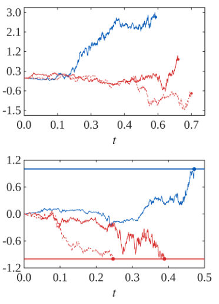
<figcaption class="paper-figure-caption"><b>Fig 1.</b> Figure 1: Illustrative examples of stopping times. In these illustrations, we con- sider two examples given by (a) the first time T at which the system crosses a ring of radius 2, and (b) the first time T elapsed until the system has dissi- pated or absorbed an amount kBT of heat. The trajectories are generated by nu- merical simulation of a Langevin equation with two–dimensional rotational flow, dXt/dt = −Yt + p</figcaption>
</figure>
<figure class="paper-figure-card">
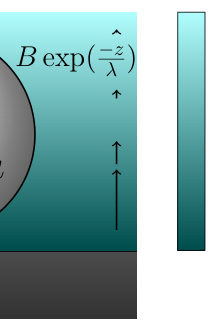
<figcaption class="paper-figure-caption"><b>Fig 2.</b> Figure 2: Sketch of a sphere moving perpendicularly to a hard wall in an aqueous environment and subject to gravity G (downward arrow) and a double-layer repul- sive force whose amplitude (upward arrows) decreases exponentially with increasing distance from the wall z; see Eq. (38). The hydrodynamic interaction between the sphere and the wall induces a space-dependent mobility µ(z) given by Eq. (37) whose value is illustrated by the color bar.</figcaption>
</figure>
<figure class="paper-figure-card">
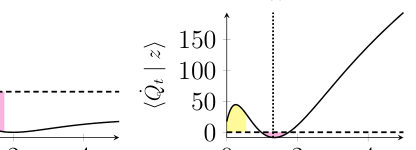
<figcaption class="paper-figure-caption"><b>Fig 3.</b> Figure 3: Analytical values for (a) the equilibrium distribution Peq(z) [Eq. (41)], (b) d(µ(z)F(z))/dz [Eq. (44)] and local expected value of the rate of heat dissipation 〈dQ/dt| zt = z〉[Eq. (45)] for the stochastic model of a sphere near a hard wall (36) with parameter values shown in Table 2. The yellow shaded regions correspond to those where ∇· (µF)(z) &gt; 0 (i.e. where exp(−Qt) is a supermartingale), and the pink shaded regions correspond to those where 〈dQ/dt| zt = z〉&lt; 0 (i.e. where Qt is a supermartingale). The horizontal dashed line in (b) and (c) are a guide to the eye set to zero, and the vertical dashed lines are set at the balance point zbal given by Eq. (42).</figcaption>
</figure>
<figure class="paper-figure-card">
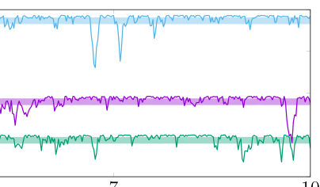
<figcaption class="paper-figure-caption"><b>Fig 4.</b> Figure 4: Representative stochastic trajectories (solid lines) of (a) the distance zt and (b,c) the heat dissipated Qt as a function of time t together with their respec- tive averages over many trajectories (〈zt〉in panel a, and 〈Qt〉in panels b and c, thick lines), obtained from numerical simulations of relaxations starting from three different initial distances: z0 = 4 (blue), z0 = 1.34 (green), and z0 = 0.4 (purple). The data is obtained by numerically integrating the stochastic model of a sphere near a hard wall (36) with parameter values shown in Table 2, using Milstein algorithm with time step ∆t = 10−4. The ensemble averages are obtained from N = 105 inde- pendent simulations. In...</figcaption>
</figure>
<figure class="paper-figure-card">
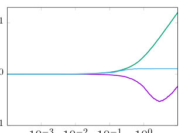
<figcaption class="paper-figure-caption"><b>Fig 5.</b> Figure 5: Numerical estimates for the average distance 〈zT 〉(a), escape probability P0 (b), average heat dissipated QT (c), and average exponential heat exp(−QT ) eval- uated using the stopping rule given by Eq. (46) and (47) with varying horizon time th. In panel (a), the pink shaded area and the yellow shaded area are respectively the regions where Qt and exp(−Qt) are supermartingales, the horizontal dashed line is the balance distance zbal given by Eq. (42), cf. Fig. 3, and the thick lines are 〈zt〉with no stopping criterion. In panel (c), the dashed lines correspond to averages of the stochastic phase contraction ΛT (see Eq. (25)). The data is obtained from numerical simulations of...</figcaption>
</figure>
</div>

<p><strong>Summary.</strong> This work develops a theoretical framework using martingale theory to analyze how heat is dissipated in complex, non-equilibrium physical systems described by Langevin dynamics. It establishes that the statistical behavior of dissipated heat—whether it appears conserved, increasing, or decreasing over time—is mathematically linked to the local contraction or expansion of the system's phase space. This extends stochastic thermodynamics by providing quantitative criteria for heat fluctuation analysis.</p>
<p><strong>Why it may be interesting.</strong> It provides a rigorous mathematical framework (martingale theory) to characterize non-equilibrium energy dissipation, which is a core topic in modern non-equilibrium statistical mechanics, relevant for understanding energy flow in complex quantum or classical systems.</p>
<details>
<summary>Detailed structure</summary>
<p><strong>Main problem.</strong> The paper investigates the martingale properties of heat dissipated during non-equilibrium overdamped Langevin dynamics in heterogeneous media.</p>
<p><strong>Main result.</strong> The heat dissipation process can exhibit transient martingale, submartingale, or supermartingale behavior, which is dictated by the sign of the phase-space contraction rate. This links heat fluctuation statistics to the non-linear dynamics of the system.</p>
<p><strong>Method.</strong> The analysis employs martingale theory, utilizing Itô calculus to derive stochastic differential equations for quantities like $\exp(-eta Q_t)$ and relating their behavior to the divergence of the drift term.</p>
<p><strong>Model / system.</strong> The model is a generic N-dimensional overdamped Langevin system governed by an Itô equation, applicable to systems like microscopic particles interacting with walls under gravity and double-layer forces.</p>
<p><strong>Key observables.</strong> Heat Dissipation ($Q_t$), Stochastic Entropy Production ($S_{env}$), and Phase-Space Contraction ($\Lambda_t$).</p>
<p><strong>Important parameters / regimes.</strong> Temperature ($T$), inverse temperature ($eta$), and the sign of the divergence $
abla \cdot (\mu \cdot \mathbf{F})$.</p>
<p><strong>Assumptions / limitations.</strong> The system is assumed to follow an overdamped Langevin equation, and the analysis relies on the mathematical framework of martingales for Itô diffusions.</p>
<p><strong>Figures summary.</strong> Figures illustrate the dependency of $\langle \exp(-Q_t) 
angle$ on parameters, showing transient decreases when the process behaves as a supermartingale.</p>
<p><strong>Paper structure.</strong> The paper establishes the theoretical framework by defining the Langevin dynamics and heat dissipation, develops the martingale criteria linking $Q_t$ to phase-space contraction, and concludes with theoretical bounds and applications to specific physical models.</p>
</details>
<details>
<summary>Abstract</summary>
<p>We investigate martingale properties of heat dissipated by generic non-equilibrium overdamped Langevin dynamics with multiple dimensions and transport coefficients that may depend explicitly on time and/or space. We find quantitative criteria that establish that heat dissipation may exhibit transient martingale (time-conserved), submartingale (time increasing), and supermartingale (time decreasing) properties in Langevin dynamics with drift coefficients with spatial non-linear dependencies. Furthermore, we reveal a tight link between the heat statistics at stopping (e.g. first-passage) times with that of a functional quantifying the phase-space contraction in the system dynamics. The theoretical results are used to predict the statistical properties of the heat dissipated by a spherical microscopic particle subject to gravity and double-layer forces and hydrodynamically interacting with a rigid wall, whose validity is confirmed by numerical simulations. These results extend the scope of stochastic energetics by revealing a non-trivial relation between heat fluctuations' statistical properties and the non-linear features of non-equilibrium processes.</p>
</details>
<p><sub><a href="#top">↑ back to top</a></sub></p>

<p><a id="paper-2609.20471"></a></p>
<h3 id="disorder-induced-modulation-of-the-nonlinear-hall-effect-in-weyl-semimetals"><a href="http://arxiv.org/abs/2609.20471v1">Disorder-induced modulation of the nonlinear Hall effect in Weyl semimetals</a></h3>
<p><strong>Authors:</strong> Juan A. Cañas, Daniel A. Bonilla, A. Martín-Ruiz<br>
<strong>Type:</strong> theory · <strong>Category:</strong> disordered systems and neural networks · <strong>PDF:</strong> <a href="https://arxiv.org/pdf/2609.20471v1">https://arxiv.org/pdf/2609.20471v1</a><br>
<strong>Analysis basis:</strong> full PDF text, analyzed in chunks
<strong>Topic relevance:</strong> <code>Keldysh / 2PI / non-Gaussian methods</code> <strong>2/5</strong> · <code>methods for driven-dissipative</code> <strong>2/5</strong></p>
<div class="figure-strip-hint">↔ Scroll figures horizontally</div>
<div class="paper-figures-scroll">
<figure class="paper-figure-card">
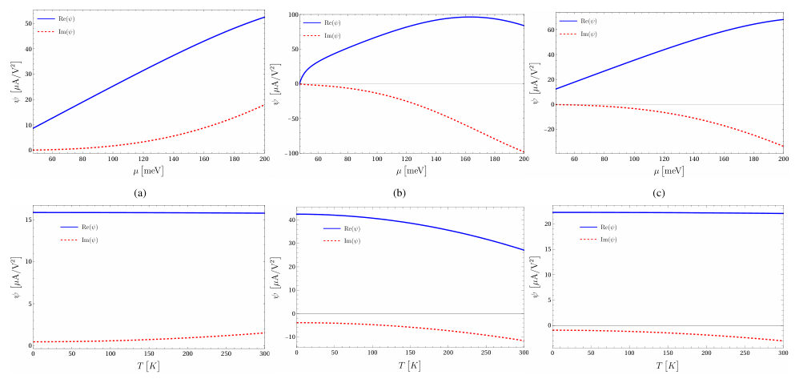
<figcaption class="paper-figure-caption"><b>Fig 1.</b> FIG. 1: Rectification efficiency ψ for various impurity models. The nodal energy separation is set to b0(+1) −b0(−1) = 40 meV, and the Fermi energy µ is measured relative to the χ = −1 node. Calculations are performed within the valid linear dispersion regime (40 ≤µ &lt; 200 meV), using vF = 105 m/s, ni = 1019 cm−3, and the angular frequency ω = 1012 s−1. The upper panels show the dependence of ψ on µ at T = 0 for (a) delta-function potentials (U0 = 30 meV nm3), (b) Gaussian potentials (d = 4 nm and U0 so that u(0) = 30 meV), and (c) screened Coulomb scatterers (ϵ = 3ϵ0). The lower panels (d, e, f) show the respective temperature dependence of ψ at a fixed chemical potential µ = 70 meV for the...</figcaption>
</figure>
<figure class="paper-figure-card">
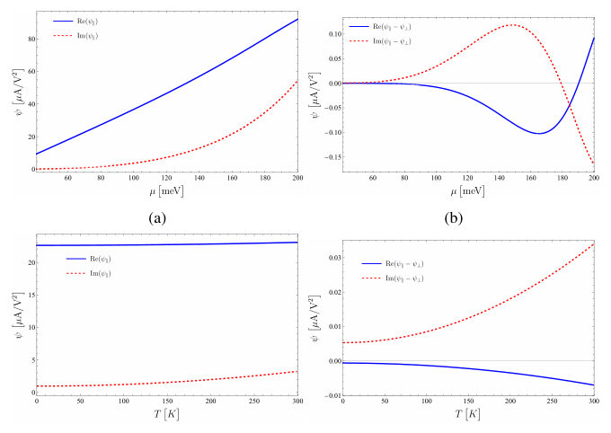
<figcaption class="paper-figure-caption"><b>Fig 2.</b> FIG. 2: Rectification efficiency for polarized magnetic impurities. The figure is arranged in a 2 × 2 grid. The upper panels display the dependence on the Fermi energy µ at T = 0 for (a) the longitudinal component ψ∥and (b) the anisotropic difference ψ∥−ψ⊥. The lower panels show the temperature dependence at a fixed chemical potential µ = 70 meV for (c) ψ∥ and (d) ψ∥−ψ⊥. As observed, the difference ψ∥−ψ⊥is finite but 3 to 4 orders of magnitude smaller than ψ∥; therefore, ψ⊥is practically identical to ψ∥and is not plotted separately. he continuum exchange strength is set to (JS)cont = 20.6 meV nm3, obtained by combining the exchange energy scale ∆ex = 165 meV used for EuCd2As2 [68] with the...</figcaption>
</figure>
</div>

<p><strong>Summary.</strong> This theoretical work examines the impact of impurities on the nonlinear Hall effect in Weyl semimetals using the semiclassical Boltzmann approach. It derives the necessary conductivity tensors by incorporating the microscopic details of impurity scattering into the transport relaxation time. The findings show that while the dominant response is isotropic, magnetic impurities introduce a measurable, helicity-dependent anisotropic correction.</p>
<p><strong>Why it may be interesting.</strong> The explicit inclusion of disorder scattering mechanisms (like magnetic impurities) into the nonlinear transport response provides a concrete, microscopic link between material imperfections and exotic topological phenomena, which is relevant for understanding realistic quantum devices.</p>
<details>
<summary>Detailed structure</summary>
<p><strong>Main problem.</strong> The study investigates how impurity scattering modulates the nonlinear Hall effect in Weyl semimetals.</p>
<p><strong>Main result.</strong> The nonlinear Hall response is determined by the Berry curvature and the momentum-dependent transport relaxation time, with anisotropic corrections arising from magnetic impurities.</p>
<p><strong>Method.</strong> The analysis employs the semiclassical Boltzmann approach, deriving rectified and second-harmonic conductivity tensors by expanding the non-equilibrium distribution function up to second order.</p>
<p><strong>Model / system.</strong> The system is Weyl semimetals, modeled using a low-energy effective Hamiltonian. The analysis incorporates various impurity scattering potentials (short-range, Gaussian, screened Coulomb, and magnetic).</p>
<p><strong>Key observables.</strong> Nonlinear Hall response (rectified and second-harmonic conductivity tensors), transport relaxation time ($ au_{k}$), and the anomalous velocity associated with the Berry curvature.</p>
<p><strong>Important parameters / regimes.</strong> Impurity coupling strength ($J$), impurity polarization ($\mathbf{S}$), and the electric field orientation relative to the impurity polarization.</p>
<p><strong>Assumptions / limitations.</strong> The analysis assumes the collision integral effect is entirely encoded in the momentum-dependent transport relaxation time ($    au_{k}$), and it neglects magnetic-field-induced orbital motion.</p>
<p><strong>Paper structure.</strong> The paper progresses by first establishing the general framework using the Boltzmann equation, then analyzing the effect of scalar disorder, and finally detailing the qualitatively different behavior induced by polarized magnetic impurities via second-order T-matrix calculations.</p>
</details>
<details>
<summary>Abstract</summary>
<p>We study the effects of impurity scattering on the nonlinear Hall response of Weyl semimetals within the semiclassical Boltzmann approach. We derive the rectified and second-harmonic conductivity tensors for a general momentum-dependent transport relaxation time and evaluate this quantity microscopically for short-range, Gaussian, screened Coulomb, and magnetic impurities. For scalar disorder, the relaxation time is isotropic and chirality independent. The nonlinear Hall response is then determined by the anomalous velocity associated with the Berry curvature, and a finite net response requires energetically inequivalent Weyl nodes to avoid cancellation between opposite chiralities. Polarized magnetic impurities lead to a qualitatively different behavior. We find that interference between the first- and second-order Born amplitudes generates a helicity-dependent anisotropic correction to the relaxation time. This anisotropy changes the tensor structure of the nonlinear Hall conductivity and gives rise to a finite second-harmonic current for suitable orientations of the electric field relative to the impurity polarization. For representative parameters, however, the anisotropic contribution is several orders of magnitude smaller than the dominant isotropic response. These results establish how the microscopic form of impurity scattering enters the nonlinear Hall response of Weyl semimetals through the transport relaxation time.</p>
</details>
<p><sub><a href="#top">↑ back to top</a></sub></p>

<p><a id="paper-2609.20823"></a></p>
<h3 id="environment-alignment-and-redundant-record-formation-in-imperfect-cnot-quantum-darwinism"><a href="http://arxiv.org/abs/2609.20823v1">Environment Alignment and Redundant Record Formation in Imperfect-CNOT Quantum Darwinism</a></h3>
<p><strong>Authors:</strong> Aleksander Lasek, Paweł Horodecki<br>
<strong>Type:</strong> theory · <strong>Category:</strong> quantum information and computing · <strong>PDF:</strong> <a href="https://arxiv.org/pdf/2609.20823v1">https://arxiv.org/pdf/2609.20823v1</a><br>
<strong>Analysis basis:</strong> full PDF text, analyzed in chunks
<strong>Topic relevance:</strong> <code>quantum measurements</code> <strong>2/5</strong> · <code>correlated / nonlocal dissipation</code> <strong>1/5</strong> · <code>driven-dissipative phase transition</code> <strong>1/5</strong></p>
<div class="figure-strip-hint">↔ Scroll figures horizontally</div>
<div class="paper-figures-scroll">
<figure class="paper-figure-card">
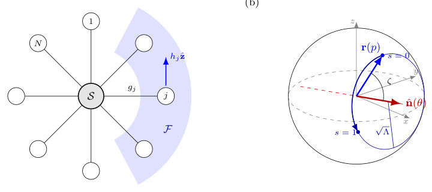
<figcaption class="paper-figure-caption"><b>Fig 1.</b> FIG. 1. Model geometry. (a) One system qubit S coupled in a star geometry to N ≡NE witness qubits with independent couplings gj; each witness also experiences a local field hj along z, illustrated by the arrow at qubit j. A fragment F (shaded) and its complement R = E \ F partition the environment. (b) Bloch-sphere geometry of one witness without a field. The initial Bloch vector r(p) and the C-INOT axis ˆn(θ) both lie in the xz plane. In the s = 0 branch the witness stays at r; in the s = 1 branch it rotates about ˆn on the circle shown, whose radius √</figcaption>
</figure>
<figure class="paper-figure-card">
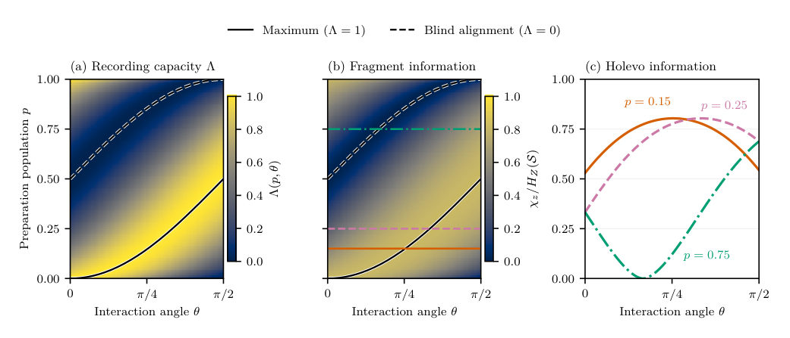
<figcaption class="paper-figure-caption"><b>Fig 2.</b> FIG. 2. Preparation and interaction-angle dependence without local fields. (a) Alignment invariant Λ over the full pure- preparation range 0 ≤p ≤1. (b) Corresponding Holevo information in fragments of size m = 2, with NE = 16 and gj ∼N (0, g2), g = 0.1. (c) Cuts through (b) at p = 0.15, 0.25, and 0.75, marked by matching horizontal lines in (b); the vertical axis shows the same normalized Holevo information as the color scale in (b). Black solid curves in (a,b) mark maximal separation (Λ = 1); black dashed curves mark blind alignment (Λ = 0). The lower-right corner, p = 0, θ = π/2, is also a blind preparation. We average over 64 sampled fragments, take the time median over t = 20, 21, . . ....</figcaption>
</figure>
<figure class="paper-figure-card">
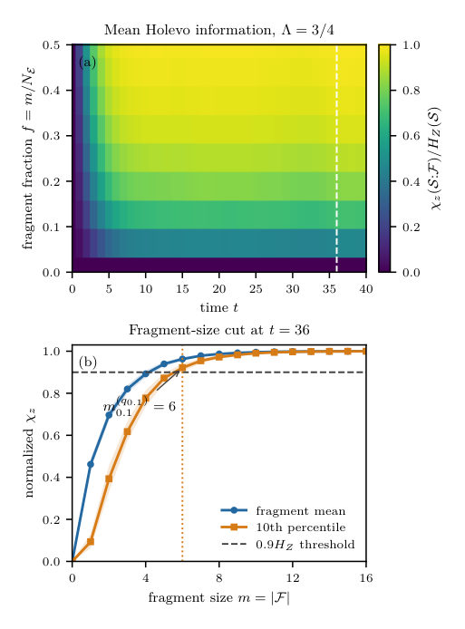
<figcaption class="paper-figure-caption"><b>Fig 3.</b> FIG. 3. Accumulation of pointer-basis Holevo information for NE = 16, p = 1/2, θ = π/3 (Λ = 3/4), without self- fields or environment–environment interactions. (a) Fragment mean versus time and f = m/NE for m ≤8, normalized by HZ(S) = 1 bit. (b) Direct fragment-size cut at t = 36 (dashed line in a), showing the fragment mean and the mean within-realization 10th percentile. Exact product overlaps are evaluated for up to 64 subsets per size in each of 24 coupling realizations; all subsets are used when fewer exist. Bands are 95% confidence intervals obtained by resampling coupling realizations. The mean curve first crosses 0.9HZ at m = 5; the orange lower-quantile curve crosses at m = 6.</figcaption>
</figure>
<figure class="paper-figure-card">
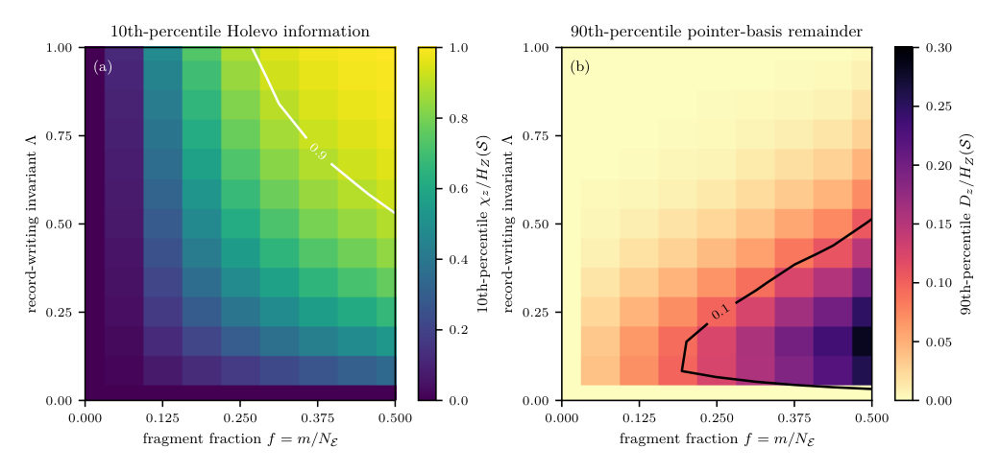
<figcaption class="paper-figure-caption"><b>Fig 4.</b> FIG. 4. Fragment statistics versus Λ and f = m/NE for NE = 16 without self-fields or environment–environment interactions. (a) Within-realization 10th percentile of χz/HZ. (b) Within-realization 90th percentile of the pointer-basis remainder Dz/HZ, where Dz = I −χz. Both panels use exact local propagators. Up to 64 subsets are sampled per size, with all 16 single-site subsets used at m = 1. Each statistic is summarized by its median over t ∈[20, 40]; preparations with the same Λ are averaged within each of 24 paired coupling realizations, followed by the disorder mean. White and black contours mark the resulting 0.9 and 0.1 levels, respectively. A value of one denotes full pointer-ensemble...</figcaption>
</figure>
<figure class="paper-figure-card">
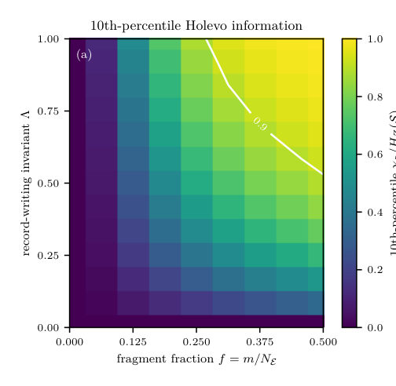
<figcaption class="paper-figure-caption"><b>Fig 5.</b> Figure 6 compares the mean and 10th-percentile Holevo information with the pointer-basis remainder at moderate and strong fields. The separation between the mean and the lower percentile shows how a high mean can conceal fragments carrying little information. As in Sec. I, a small remainder is informative only together with high Holevo information at the same fragment size; this joint assessment excludes the blind zero-field boundary, where both vanish.</figcaption>
</figure>
</div>

<p><strong>Summary.</strong> This work analyzes how objective classical information is encoded into the environment using an imperfect-CNOT gate model. By quantifying environmental record redundancy using Holevo information and branch separation, the authors show that recording efficiency depends nonmonotonically on gate imperfections and local fields. The results connect the geometry of local information acquisition to the minimum size of environmental fragments needed for reliable quantum memory.</p>
<p><strong>Why it may be interesting.</strong> The detailed analysis of how local information acquisition geometry dictates the necessary size of environmental fragments for robust recording provides deep insights into the physical mechanisms underlying quantum Darwinism.</p>
<details>
<summary>Detailed structure</summary>
<p><strong>Main problem.</strong> The paper investigates how objective classical information emerges from quantum dynamics through redundant environmental records, specifically within the framework of imperfect quantum gates.</p>
<p><strong>Main result.</strong> Recording efficiency exhibits a nonmonotonic response to interaction imperfection and local field strength, and the required fragment size for robust recording is dictated by the geometry of local information acquisition.</p>
<p><strong>Method.</strong> The analysis employs information theoretic measures like Holevo information ($\chi_z$) and conditional-state distinguishability, analyzing the evolution of environmental qubits in an imperfect-CNOT model.</p>
<p><strong>Model / system.</strong> The model uses an imperfect-CNOT interaction coupling a system qubit $S$ to a pure, noninteracting environment $E$ composed of multiple environment qubits. The Hamiltonian includes terms for the imperfect gate and local field couplings.</p>
<p><strong>Key observables.</strong> Quantum mutual information $I(S:F)$, Holevo information $\chi_z(S:F)$, and local branch separation $A_j(t)$ are key diagnostics for quantifying recorded information.</p>
<p><strong>Important parameters / regimes.</strong> The alignment parameter $\Lambda$, interaction imperfection, local field strength ($h_{	ext{rms}}$), and the field distribution (uniform vs. Gaussian) are crucial parameters.</p>
<p><strong>Assumptions / limitations.</strong> The primary claims are made assuming pure product initial environments with no environment-environment interactions ($H_{EE}=0$).</p>
<p><strong>Figures summary.</strong> Figures illustrate the field response ($\chi_z/H_Z$, $D_z/H_Z$, $\chi_{\min}$) versus preparation bias and field strength for different interaction angles, comparing uniform and Gaussian field profiles.</p>
<p><strong>Paper structure.</strong> The paper progresses by establishing the model (imperfect-CNOT), defining information measures, analyzing the role of the alignment parameter $\Lambda$, and then systematically investigating how field disorder and local field strengths affect the recording process via branch separation analysis.</p>
</details>
<details>
<summary>Abstract</summary>
<p>Quantum Darwinism explains objective information through redundant environmental records. Earlier work established that imperfect records can be amplified and that environment self-evolution can enhance or suppress their formation. We investigate how preparation, interaction angle, and field disorder combine in an imperfect-CNOT model with random Gaussian couplings and pure, noninteracting environment qubits. We find that, without fields, a single alignment parameter $Λ$ determines the preparation and interaction-angle dependence of conditional-state distinguishability. Increasing interaction imperfection or local field strength can improve or suppress recording. We explain this nonmonotonic response through the geometry of conditional branch separation. For the pure initial environments considered here, the $Z$ basis remains optimal for Holevo information, so field-assisted recording requires no change of the recorded system observable. Comparing uniform local field strengths with Gaussian-distributed strengths at equal root-mean-square strength shows how disorder broadens both beneficial and detrimental field effects. Exact expressions for fragment information and numerical simulations with up to 24 environment qubits quantify the distinction between high mean information and reliable records across fragments and throughout a finite observation window. These results connect the geometry of local information acquisition to the fragment sizes needed for robust recording. The branch-distinguishability analysis itself requires only the conditional evolution of each environment qubit and extends to other interactions that preserve a system pointer basis.</p>
</details>
<p><sub><a href="#top">↑ back to top</a></sub></p>

<p><a id="paper-2609.20502"></a></p>
<h3 id="unconstrained-compact-lattice-qedmath495math-coupled-to-phonons-gauss-sectors-orthogonal-semimetal-and-deconfined-criticality"><a href="http://arxiv.org/abs/2609.20502v1">Unconstrained compact lattice QED$_{2+1}$ coupled to phonons: Gauss sectors, orthogonal semimetal, and deconfined criticality</a></h3>
<p><strong>Authors:</strong> João C. Inácio, Fakher F. Assaad<br>
<strong>Type:</strong> theory · <strong>Category:</strong> strongly correlated electrons · <strong>PDF:</strong> <a href="https://arxiv.org/pdf/2609.20502v1">https://arxiv.org/pdf/2609.20502v1</a><br>
<strong>Analysis basis:</strong> full PDF text, analyzed in chunks
<strong>Topic relevance:</strong> <code>analog quantum simulation</code> <strong>2/5</strong> · <code>Keldysh / 2PI / non-Gaussian methods</code> <strong>1/5</strong> · <code>methods for driven-dissipative</code> <strong>1/5</strong></p>
<div class="figure-strip-hint">↔ Scroll figures horizontally</div>
<div class="paper-figures-scroll">
<figure class="paper-figure-card">
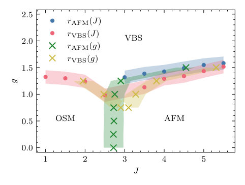
<figcaption class="paper-figure-caption"><b>Fig 1.</b> FIG. 1. Ground state phase diagram of the unconstrained Hamiltonian in Eq. (1) as a function of the electric field strength J and spinon-phonon coupling g, for ω0 = 2 and K = 1. The diagram contains OSM, AFM, and VBS phases. The positions of the phase boundaries are approximately de- termined from the crossings of the AFM and VBS correlation ratio for finite-size data. The shaded regions are an estimate of the error, i.e. half of the grid width.</figcaption>
</figure>
<figure class="paper-figure-card">
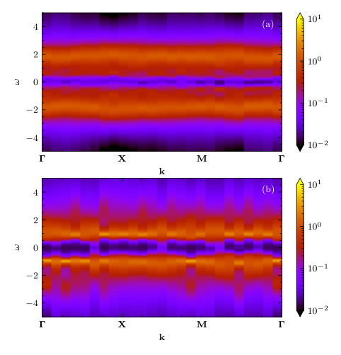
<figcaption class="paper-figure-caption"><b>Fig 2.</b> FIG. 2. Representative single particle spectral function A(k, ω) at (a) J = 1 and (b) J = 5, both at g = 0, obtained by SAC. The colour scale is logarithmic. Here β = L = 16.</figcaption>
</figure>
<figure class="paper-figure-card">
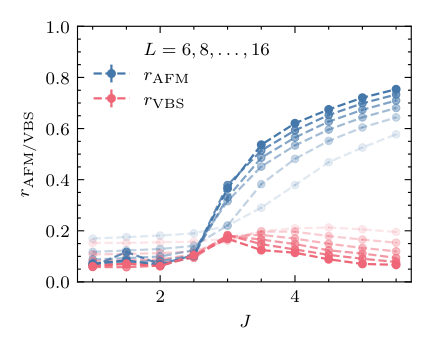
<figcaption class="paper-figure-caption"><b>Fig 3.</b> FIG. 3. AFM (blue) and VBS (red) correlation ratios as func- tions of J at g = 0 for L = 6, 8, . . . , 16. The AFM curves cross near Jc ≃2.6. The VBS ratio develops a maximum in the same region. Here we use β = L.</figcaption>
</figure>
<figure class="paper-figure-card">
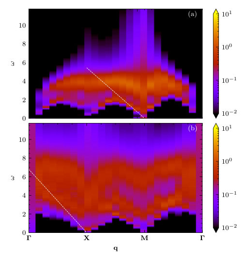
<figcaption class="paper-figure-caption"><b>Fig 4.</b> FIG. 5. Spin (a) and dimer (b) dynamical structure factors for L = 16, J = 1, and g = 0, obtained by SAC. The dashed lines are guides to the approximately linear low-energy thresholds. Here we use β = L.</figcaption>
</figure>
<figure class="paper-figure-card">
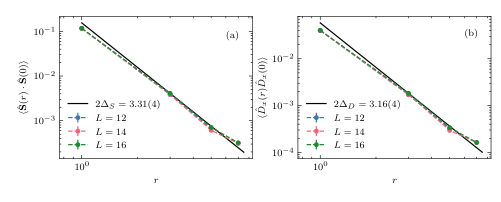
<figcaption class="paper-figure-caption"><b>Fig 5.</b> FIG. 4. Equal-time real-space (a) spin and (b) dimer corre- lations at J = 1 and g = 0. The black lines show algebraic fits, yielding 2∆S = 3.31(4) and 2∆D = 3.16(4). Here we use β = L.</figcaption>
</figure>
</div>

<p><strong>Summary.</strong> This paper studies a lattice QED$_{2+1}$ model coupled to phonons to understand the physical constraints imposed by Gauss's law. Using advanced quantum Monte Carlo simulations, the authors map out a phase diagram featuring Orthogonal Semimetallic (OSM), AFM, and VBS phases. They rigorously demonstrate that enforcing the physical constraint of Gauss's law destabilizes any deconfined phase, driving the system into a conventional magnetic or dimerized order.</p>
<p><strong>Why it may be interesting.</strong> The work provides a detailed theoretical framework for understanding how gauge constraints fundamentally alter the low-energy physics of strongly correlated systems, particularly concerning the competition between different ordered states near quantum critical points.</p>
<details>
<summary>Detailed structure</summary>
<p><strong>Main problem.</strong> The study investigates the physical consequences of coupling an unconstrained compact lattice QED$_{2+1}$ gauge theory to phonons, focusing on how the system selects its physical ground state sector.</p>
<p><strong>Main result.</strong> The authors conclude that upon projecting the theory onto the physical Hilbert space (where Gauss's law is enforced), deconfinement in compact lattice QED$_{2+1}$ is always unstable towards either Antiferromagnetic (AFM) or Valence-Bond-Solid (VBS) order.</p>
<p><strong>Method.</strong> The research employs exact auxiliary-field quantum Monte Carlo simulations and path integral formulations, analyzing the system in both unconstrained and constrained limits.</p>
<p><strong>Model / system.</strong> The model is an unconstrained compact U(1) lattice gauge theory (QED$_{2+1}$) coupled to bond phonons on a square lattice, containing fermionic degrees of freedom. The Hamiltonian includes terms for hopping, gauge fields (electric/magnetic), and lattice vibrations.</p>
<p><strong>Key observables.</strong> Phase diagram showing ground state orders (OSM, AFM, VBS); single-particle spectral function $A(\mathbf{k}, \omega)$; Gauss sector susceptibility ($\chi_Q$).</p>
<p><strong>Important parameters / regimes.</strong> Fermion flavor number ($N_f=2$); electric field strength ($J$); spinon-phonon coupling ($g$); gauge constraint parameter ($\lambda$).</p>
<p><strong>Assumptions / limitations.</strong> The analysis relies on the projection from an unconstrained gauge theory to the physical sector defined by Gauss's law ($\hat{Q}_i=0$), and uses Monte Carlo methods with approximations like Trotter decomposition.</p>
<p><strong>Figures summary.</strong> The figures illustrate the phase diagram showing transitions between OSM, AFM, and VBS phases, and show representative single-particle spectral functions for different gauge field strengths.</p>
<p><strong>Paper structure.</strong> The paper systematically analyzes the Hamiltonian, first in an unconstrained manner to identify the Orthogonal Semimetallic (OSM) phase, and then analyzes the effect of explicitly enforcing Gauss's law, leading to the determination of the full phase diagram and the conclusion regarding the stability of deconfinement.</p>
</details>
<details>
<summary>Abstract</summary>
<p>Gauge theoretic descriptions of 2D quantum magnets are defined on a restricted physical Hilbert space by imposing Gauss's law. In this work, we study an unconstrained compact lattice QED$_{2+1}$ coupled to bond phonons, in which local Gauss operators are conserved, but their eigenvalues are not a priori fixed. Using exact auxiliary-field quantum Monte Carlo simulations at $N_f = 2$, we investigate how the physical Gauss sector becomes energetically favourable, and how this process is connected to confinement and symmetry breaking. We identify an orthogonal semimetallic (OSM) phase, in which fermions striped off their gauge charge and form a Dirac liquid. This phase mixes various Gauss sectors, and becomes unstable when Gauss's law is explicitly enforced. Upon the imposition of Gauss's law, compactness allows for monopole excitations carrying antiferromagnetic (AFM) and valence-bond-solid (VBS) quantum numbers. Gauge field fluctuations and spinon-phonon coupling tune between the competition of such monopoles and generate a phase diagram with OSM, AFM and VBS orders. The transitions out of the OSM phase coincide with the dynamical generation of Gauss's law, while the competition between AFM and VBS charged monopoles produces a transition consistent with deconfined quantum criticality. Thus our results establish that upon the projection to the physical Hilbert space, deconfinement in compact lattice QED$_{2+1}$ is always unstable towards either AFM or VBS order.</p>
</details>
<p><sub><a href="#top">↑ back to top</a></sub></p>

<p><a id="paper-2609.20472"></a></p>
<h3 id="collective-charge-math1189math-bosonic-excitations-in-charge-ordered-systems"><a href="http://arxiv.org/abs/2609.20472v1">Collective Charge-\(2e\) Bosonic Excitations in Charge-Ordered Systems</a></h3>
<p><strong>Authors:</strong> Ping Tang<br>
<strong>Type:</strong> theory · <strong>Category:</strong> strongly correlated electrons · <strong>PDF:</strong> <a href="https://arxiv.org/pdf/2609.20472v1">https://arxiv.org/pdf/2609.20472v1</a><br>
<strong>Analysis basis:</strong> full PDF text, analyzed in chunks
<strong>Topic relevance:</strong> <code>analog quantum simulation</code> <strong>2/5</strong> · <code>Keldysh / 2PI / non-Gaussian methods</code> <strong>1/5</strong></p>
<div class="figure-strip-hint">↔ Scroll figures horizontally</div>
<div class="paper-figures-scroll">
<figure class="paper-figure-card">
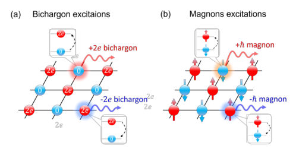
<figcaption class="paper-figure-caption"><b>Fig 1.</b> FIG. 1. Schematic of (a) two oppositely charged bichargon excitations in a charge-ordered state with alternating doubly occupied and empty sites, arising from electron-pair transi- tions between the two local charge configurations, and (b) their magnon counterparts in a bipartite antiferromagnet, as- sociated with spin-flip excitations and carrying opposite spin angular momenta ±ℏ.</figcaption>
</figure>
<figure class="paper-figure-card">
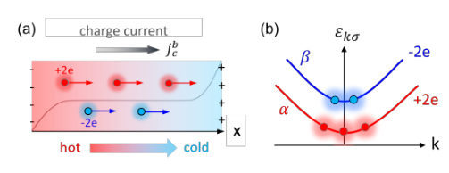
<figcaption class="paper-figure-caption"><b>Fig 2.</b> FIG. 2. Bichargon Seebeck effect. (a) When thermally excited bichargons are unequally populated in the two branches, their diffusion under a temperature gradient generates a net charge current and opposite charge accumulation at the two sample edges, constituting the charge counterpart of the magnonic spin Seebeck effect in antiferromagnets. (b) Unequal ther- mal populations of the two nondegenerate bichargon branches that arise when the chemical potential is tuned away from the charge-neutrality point.</figcaption>
</figure>
<figure class="paper-figure-card">
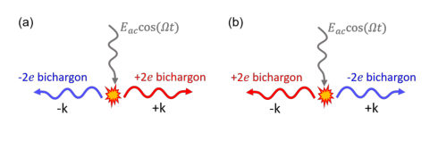
<figcaption class="paper-figure-caption"><b>Fig 3.</b> FIG. 3. Parametric excitation of coherent pairs of oppositely charged bichargons propagating in opposite directions via (a) the process α† kβ† −k in Eq. (23) and (b) its inversion-related counterpart. The two equivalent processes carry equal and opposite charge currents, resulting in a vanishing macroscopic current, whereas an applied dc bias lifts this cancellation and drives a net dc charge current carried by the parametrically generated bichargon pairs, analogous to photoconductivity in semiconductors mediated by photoexcited electron–hole pairs.</figcaption>
</figure>
</div>

<p><strong>Summary.</strong> This theoretical work introduces 'bichargons,' quantized collective bosonic excitations carrying $\pm 2e$ charge in charge-ordered systems. It establishes that these excitations can mediate a charge Seebeck effect under a temperature gradient, while also predicting a unique photoconductivity mechanism driven by AC fields. This extends the magnon concept to the charge sector, providing a new framework for understanding charge transport in correlated materials.</p>
<p><strong>Why it may be interesting.</strong> The concept of bichargons provides a direct, charge-based analogue to magnons, allowing the application of established spin-transport physics (like the Seebeck effect) to charge-ordered Mott insulators, which is highly relevant for understanding correlated electron transport.</p>
<details>
<summary>Detailed structure</summary>
<p><strong>Main problem.</strong> To determine if staggered charge-pseudospin order can support collective quasiparticle excitations carrying electric charge, analogous to magnons in spin-ordered systems.</p>
<p><strong>Main result.</strong> The theory predicts the existence of 'bichargons' ($\pm 2e$ bosons) that mediate a charge Seebeck effect and can support a DC current via AC field excitation, extending the magnon paradigm to the charge sector.</p>
<p><strong>Method.</strong> The analysis involves formulating an effective charge-pseudospin model, quantizing fluctuations via Holstein-Primakoff transformation, and diagonalizing the resulting bosonic Hamiltonian using Bogoliubov transformations.</p>
<p><strong>Model / system.</strong> The system is a charge-ordered material modeled by an effective pseudospin-1/2 Hamiltonian derived from the extended Hubbard model, analyzed around the charge-neutrality point.</p>
<p><strong>Key observables.</strong> Bichargon branches ($\pm 2e$ charge), Seebeck coefficient, DC charge current under bias, and the transition from insulating (static E-field) to conducting (AC field) behavior.</p>
<p><strong>Important parameters / regimes.</strong> Chemical potential ($\mu$) tuning away from charge-neutrality, temperature gradient ($
abla T$), and applied electric fields (static $E$ vs. AC).</p>
<p><strong>Assumptions / limitations.</strong> The analysis assumes the charge-ordered ground state is represented by staggered pseudospin order, and the quasiparticle number of bichargons is not conserved.</p>
<p><strong>Figures summary.</strong> Figure 1 schematically compares the two oppositely charged bichargon excitations to their magnon counterparts in an antiferromagnet. Figure 2 illustrates the bichargon Seebeck effect and the resulting charge accumulation.</p>
<p><strong>Paper structure.</strong> The paper first establishes the model and derives the two gapped bosonic branches (bichargons). It then analyzes the thermal response (Seebeck effect) and the limitations under static fields. Finally, it explores the non-equilibrium transport driven by AC fields, establishing the new bosonic charge carrier.</p>
</details>
<details>
<summary>Abstract</summary>
<p>Charge order is conventionally characterized by a static modulation of the electronic density, while its collective excitations remain less developed from a quasiparticle perspective than those of spin-ordered systems. Here, we formulate the collective excititations of charge order within an effective charge-pseudospin model, in which the charge-ordered ground state is represented by staggered pseudospin order. Quantizing fluctuations around this ordered state via a Holstein--Primakoff transformation, we reveal two branches of bosonic quasiparticles with degenerate, gapped dispersions that carry opposite quantized electric charges $\pm 2e$. We therefore term these charge-$2e$ bosons ``\textit{bichargons},'' closely paralleling the two magnon branches of a bipartite antiferromagnet that carry opposite spin angular momenta. We show that a temperature gradient drives the diffusion of thermally excited bichargons, generating a charge Seebeck response when the degeneracy between the oppositely charged branches is lifted by tuning the chemical potential away from the charge-neutrality point. In contrast, despite carrying finite electric charges, a thermal bichargon gas remains electrically insulating under a static electric field because bichargon quasiparticle number is not conserved. An ac electric field, however, can parametrically generate coherent pairs of oppositely charged bichargons that support a finite dc drift current in the presence of a bias electric field, offering a bosonic analogue of photoconductivity mediated by photoexcited electron--hole pairs in semiconductors. Our results establish bichargons as a new class of collective bosonic charge carriers in charge-ordered systems and extend the quasiparticle paradigm of magnons in spin-ordered systems to the charge sector, with electric charge replacing spin angular momentum as the transported quantity.</p>
</details>
<p><sub><a href="#top">↑ back to top</a></sub></p>

<p><a id="paper-2609.20020"></a></p>
<h3 id="corner-entanglement-scaling-with-projected-entangled-pair-states"><a href="http://arxiv.org/abs/2609.20020v1">Corner entanglement scaling with projected entangled pair states</a></h3>
<p><strong>Authors:</strong> Chloé Van Bastelaere, Rui-Zhen Huang, Laurens Vanderstraeten<br>
<strong>Type:</strong> theory · <strong>Category:</strong> strongly correlated electrons · <strong>PDF:</strong> <a href="https://arxiv.org/pdf/2609.20020v1">https://arxiv.org/pdf/2609.20020v1</a><br>
<strong>Analysis basis:</strong> full PDF text, analyzed in chunks
<strong>Topic relevance:</strong> <code>methods for driven-dissipative</code> <strong>2/5</strong> · <code>analog quantum simulation</code> <strong>1/5</strong></p>
<div class="figure-strip-hint">↔ Scroll figures horizontally</div>
<div class="paper-figures-scroll">
<figure class="paper-figure-card">
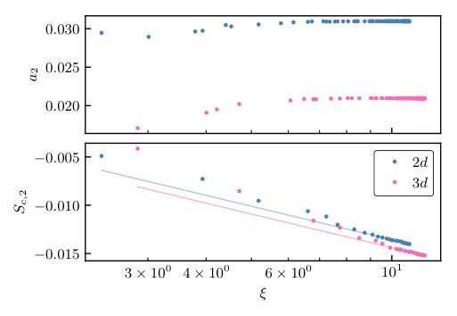
<figcaption class="paper-figure-caption"><b>Fig 1.</b> FIG. 1. Scaling of (top) the area law prefactor and (bottom) the corner contribution as a function of the correlation length for the 2d TFIM and the 3d classical Ising model at criticality. The dots are the data points, and the continuous lines are the linear fit. For the clarity of the bottom plot, we only show one in three data points.</figcaption>
</figure>
<figure class="paper-figure-card">
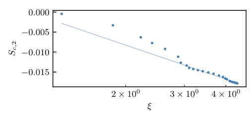
<figcaption class="paper-figure-caption"><b>Fig 2.</b> FIG. 2. Scaling of the corner contribution as a function of the correlation length for the bilayer XY model at criticality. The dots are the data points, and the continuous line is the linear fit. For the clarity of the plot, we only show one in three data points.</figcaption>
</figure>
<figure class="paper-figure-card">
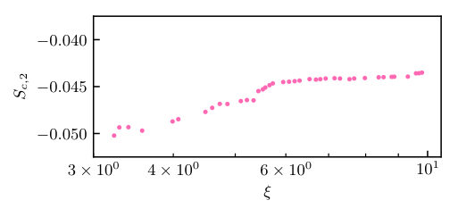
<figcaption class="paper-figure-caption"><b>Fig 3.</b> FIG. 3. Scaling of the corner contribution Sc,2 as a function of the correlation length for a gapped chiral spin liquid for D = 5.</figcaption>
</figure>
<figure class="paper-figure-card">
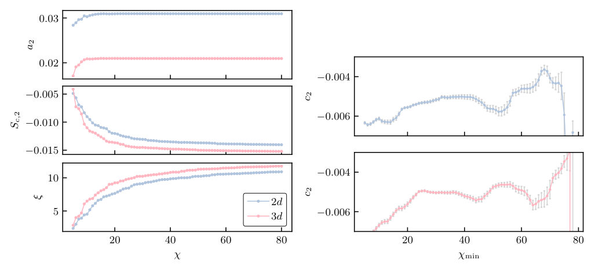
<figcaption class="paper-figure-caption"><b>Fig 4.</b> FIG. 4. (Left) The area law prefactor a2, the corner contribution Sc,2, and the correlation length ξ as a function of the bond dimension χ of the boundary MPS for the 2d quantum and the 3d classical Ising model at criticality. The continuous lines are a guide for the eye. (Right) Corner coefficient c2 extracted for the 2d TFIM (top) and the 3d classical Ising model (bottom) for different window sizes.</figcaption>
</figure>
<figure class="paper-figure-card">

<figcaption class="paper-figure-caption"><b>Fig 5.</b> FIG. 5. (Left) The area law prefactor a2, the corner contribution Sc,2, and the correlation length ξ as a function of the bond dimension χ of the boundary MPS for the bilayer XY model at criticality. The continuous lines are a guide for the eye. (Right) Corner coefficient c2 extracted for the bilayer XY model for different window sizes.</figcaption>
</figure>
</div>

<p><strong>Summary.</strong> This work introduces a robust tensor network method to calculate the corner entanglement entropy in 2D quantum systems. By analyzing the scaling of this corner contribution, the authors successfully extract universal critical coefficients for models like the TFIM and XY model. This provides a powerful diagnostic tool for characterizing quantum critical points in strongly correlated matter.</p>
<p><strong>Why it may be interesting.</strong> The rigorous extraction of universal critical exponents like $c_2$ using tensor networks provides a powerful, non-perturbative diagnostic tool for characterizing quantum critical points in strongly correlated materials.</p>
<details>
<summary>Detailed structure</summary>
<p><strong>Main problem.</strong> The paper develops a method to extract the universal scaling of the corner entanglement entropy from Projected Entangled Pair States (PEPS) directly in the thermodynamic limit for 2D systems.</p>
<p><strong>Main result.</strong> The corner entanglement contribution scales logarithmically with the effective correlation length ($\xi$) at quantum critical points, yielding consistent corner coefficients ($c_2$) when applied to the TFIM and XY models.</p>
<p><strong>Method.</strong> The authors use the PEPS formalism to calculate the Rényi-2 entropy ($S_2$) for corner-shaped bipartitions, separating the result into an area law term and a corner contribution ($S_{c,2}$).</p>
<p><strong>Model / system.</strong> The study applies to critical 2D quantum models, including the Transverse Field Ising Model (TFIM) and the Bilayer XY Model, and also tests universality using the classical 3D Ising Model.</p>
<p><strong>Key observables.</strong> Corner entanglement entropy ($S_{c, 2}$), Area law prefactor ($a_2$), Correlation length ($\xi$), and the corner coefficient ($c_2$).</p>
<p><strong>Important parameters / regimes.</strong> The analysis focuses on the thermodynamic limit and the scaling behavior with the correlation length $\xi$.</p>
<p><strong>Assumptions / limitations.</strong> The method relies on the hypothesis of finite-entanglement scaling for PEPS simulations and approximates the infinite system using boundary MPS techniques.</p>
<p><strong>Figures summary.</strong> Figures show the scaling of the area law prefactor ($a_2$) and the corner contribution ($S_{c,2}$) versus the bond dimension ($\chi$) for the 2D TFIM and Bilayer XY model, demonstrating the extraction of $c_2$.</p>
<p><strong>Paper structure.</strong> The paper first reviews the theoretical framework for calculating entanglement entropy in PEPS, extending the analysis from linear to corner bipartitions. It then applies this method to calculate $c_2$ for various critical models, comparing results across different systems and methods.</p>
</details>
<details>
<summary>Abstract</summary>
<p>Entanglement scaling provides a powerful probe of universal properties at quantum critical points. In two dimensions, contributions originating from a corner-shaped bipartition exhibit a universal scaling, which is determined by the underlying conformal field theory. We develop a method to extract this corner entanglement entropy from projected entangled pair states directly in the thermodynamic limit. When applied to models at a quantum critical point, we show that the corner contribution exhibits scaling with the effective correlation length, in agreement with the hypothesis of finite-entanglement scaling. Our results for the corner coefficients are consistent with other methods, demonstrating the efficiency of our method for diagnosing strongly-correlated quantum critical points in two dimensions.</p>
</details>
<p><sub><a href="#top">↑ back to top</a></sub></p>

<p><a id="paper-2609.20461"></a></p>
<h3 id="correlation-free-transition-path-sampling-through-shooting-point-generation-guided-by-committor-learning"><a href="http://arxiv.org/abs/2609.20461v1">Correlation-Free Transition Path Sampling through Shooting Point Generation Guided by Committor Learning</a></h3>
<p><strong>Authors:</strong> Maximilian Negedly, Sebastian Falkner, Alessandro Coretti, Christoph Dellago<br>
<strong>Type:</strong> theory · <strong>Category:</strong> statistical mechanics · <strong>PDF:</strong> <a href="https://arxiv.org/pdf/2609.20461v1">https://arxiv.org/pdf/2609.20461v1</a><br>
<strong>Analysis basis:</strong> full PDF text, analyzed in chunks
<strong>Topic relevance:</strong> <code>quantum measurements</code> <strong>2/5</strong> · <code>methods for driven-dissipative</code> <strong>1/5</strong></p>
<div class="figure-strip-hint">↔ Scroll figures horizontally</div>
<div class="paper-figures-scroll">
<figure class="paper-figure-card">

<figcaption class="paper-figure-caption"><b>Fig 1.</b> Figure 1. Overview of the steps involved in the GenAIMMD al- gorithm. Flowchart elements connected by solid arrows make up the self-consistency loop, while dashed arrows connect steps outside of the loop. The in-loop steps are assigned one of three categories: Dynamics (blue), where the main focus lies on propagating training samples, AIMMD (orange), where the committor model and sam- ple labels are updated, and Generator (green), where the Boltzmann Generator is trained and used to generate new training samples.</figcaption>
</figure>
<figure class="paper-figure-card">

<figcaption class="paper-figure-caption"><b>Fig 2.</b> Figure 2. Training results for the two-dimensional Wolfe-Quapp po- tential. (A) shows the iso-lines of the potential energy in solid black with labels in units of kBT, as well as the committor pB(x,y) corre- sponding to the states defined by the white circles, learned using the GenAIMMD algorithm. The two black dashed lines connecting the states illustrate transition paths using the upper (long dashes) and the lower (short dashes) reaction channel, respectively. (B) depicts sam- ples generated by the Boltzmann Generator in different committor bias windows and re-sampled into the corresponding biased Boltz- mann distribution (see Eq. (10)). (C) plots the mean relative effective sample size...</figcaption>
</figure>
<figure class="paper-figure-card">

<figcaption class="paper-figure-caption"><b>Fig 3.</b> Figure 3. Training results for the polymer model. (A) and (B) depict the stable conformations of the polymer, i.e., state A and state B, respectively. (C) shows the relative effective sample size as a function of GenAIMMD cycles, averaged over multiple committor bias windows within each cycle. (D) displays the predicted committor against the numerically estimated (reference) committor for a set of test samples, where each black dot corresponds to a single system configuration and the straight red line corresponds to perfect agreement between the reference and the prediction. The blue line marks the average reference committor binned by the predicted committor, and the orange area indicates...</figcaption>
</figure>
<figure class="paper-figure-card">

<figcaption class="paper-figure-caption"><b>Fig 4.</b> Figure 4. Performance comparison between standard TPS (blue) and shooting points generation using the GenAIMMD-trained Boltzmann Generator conditioned on the learned committor (orange) in (A) the two-dimensional model and (B) the polymer model. The colored lines are 30 independent runs (TPS simulations in case of standard TPS, blocks of generated shooting points in case of the sampled shooting points). The solid black lines are averages over the colored lines at the respective step. First row: Absolute error of the distribution of points along transition paths p(x|TP) as a function of two-way shooting trials, measured as the L1 distance between a reference histogram obtained via a...</figcaption>
</figure>
</div>

<p><strong>Summary.</strong> This paper introduces GenAIMMD, an advanced machine learning framework for path sampling that overcomes the limitations of traditional methods like TPS. By iteratively learning the system's committor and using conditioned Boltzmann Generators, it generates uncorrelated transition paths without requiring prior knowledge of the reaction coordinate. This offers a powerful, parallelizable tool for studying rare events in condensed matter and chemical physics.</p>
<p><strong>Why it may be interesting.</strong> This work directly addresses the computational bottleneck in studying non-equilibrium dynamics and rare events, which is crucial for understanding phase transitions and chemical reaction mechanisms in complex systems.</p>
<details>
<summary>Detailed structure</summary>
<p><strong>Main problem.</strong> The core problem is efficiently characterizing rare transitions between long-lived metastable states in complex physical systems.</p>
<p><strong>Main result.</strong> The proposed GenAIMMD algorithm provides a correlation-free and fully parallelizable path sampling scheme that significantly outperforms standard Transition Path Sampling (TPS) by eliminating the need for a predefined reaction coordinate.</p>
<p><strong>Method.</strong> It integrates Committor Learning (using ML models like MLPs) with Conditioned Boltzmann Generators (Normalizing Flows) in an active, self-consistent loop to learn the transition mechanism and sample paths independently.</p>
<p><strong>Model / system.</strong> The methods are tested on a two-dimensional toy model governed by a quartic potential and a higher-dimensional polymer system modeled with standard molecular force fields (Lennard-Jones, harmonic bonds, angle potentials).</p>
<p><strong>Key observables.</strong> Reactive trajectories, the committor probability $p_B(x)$, and the path distribution $p(x|TP)$ are key observables used for benchmarking.</p>
<p><strong>Important parameters / regimes.</strong> The simulation involves various hyperparameters for the Boltzmann Generator (learning rates, batch sizes) and the physical systems include specific potential parameters and state definitions (e.g., Radius of Gyration thresholds for the polymer).</p>
<p><strong>Assumptions / limitations.</strong> The primary assumption overcome is the need for prior knowledge of a reaction coordinate, which is a major limitation of previous path sampling techniques.</p>
<p><strong>Figures summary.</strong> Figures illustrate the 2D potential energy surface, the learned committor, and the comparison of path distributions ($p(x|TP)$) between GenAIMMD and standard TPS for both the 2D and polymer systems.</p>
<p><strong>Paper structure.</strong> The paper first introduces the limitations of TPS, then details the AIMMD framework for committor estimation, progresses to using Boltzmann Generators for sampling, and finally presents the integrated, iterative GenAIMMD algorithm, concluding with extensive benchmarks on two distinct physical models.</p>
</details>
<details>
<summary>Abstract</summary>
<p>Studying the dynamical behavior of a system often depends on characterizing how it transitions between long-lived states. Because such transitions are rare, observing them usually requires specialized enhanced sampling techniques. Transition Path Sampling (TPS) is a well-established method for generating reactive trajectories, which is simple to implement and does not require the definition of a preconceived reaction coordinate. However, its efficiency is limited by its sequential nature and the resulting correlations between sampled paths. Previous work addressed this limitation by combining TPS with a sampling scheme based on conditioned Boltzmann Generators, a generative machine learning model capable of sampling a given target probability distribution. This approach produces uncorrelated transition paths but relies on an accurate reaction coordinate, which is rarely known in advance. Building on recent advances in committor learning, specifically on the Artificial Intelligence for Molecular Mechanism Discovery (AIMMD) method, in this work we introduce GenAIMMD, an iterative algorithm that actively and self-consistently learns the ideal reaction coordinate (the committor) and trains a conditioned Boltzmann Generator to sample from arbitrary bias windows along it. GenAIMMD thereby provides a correlation-free and fully parallelizable path sampling scheme that does not require prior knowledge of the system's transition mechanism. We apply GenAIMMD to a two-dimensional toy model and a higher-dimensional polymer system. In both cases, GenAIMMD succeeds in training the Boltzmann Generator and learning the committor. Benchmark results show a substantial increase in performance compared to standard TPS.</p>
</details>
<p><sub><a href="#top">↑ back to top</a></sub></p>

<p><a id="paper-2609.20777"></a></p>
<h3 id="global-minima-of-the-thomson-problem-in-a-disk-a-molecular-dynamics-approach-with-fixed-border-charges"><a href="http://arxiv.org/abs/2609.20777v1">Global Minima of the Thomson Problem in a Disk: A Molecular Dynamics Approach with Fixed Border Charges</a></h3>
<p><strong>Authors:</strong> Georgiy K. Lavrov, Eduard G. Nikonov<br>
<strong>Type:</strong> theory · <strong>Category:</strong> statistical mechanics · <strong>PDF:</strong> <a href="https://arxiv.org/pdf/2609.20777v1">https://arxiv.org/pdf/2609.20777v1</a><br>
<strong>Analysis basis:</strong> full PDF text, analyzed in chunks
<strong>Topic relevance:</strong> <code>analog quantum simulation</code> <strong>2/5</strong> · <code>methods for driven-dissipative</code> <strong>1/5</strong></p>
<div class="figure-strip-hint">↔ Scroll figures horizontally</div>
<div class="paper-figures-scroll">
<figure class="paper-figure-card">

<figcaption class="paper-figure-caption"><b>Fig 1.</b> FIG. 1. Voronoi diagrams of our ground–state configurations for (a) N = 60, (b) 61, (c)</figcaption>
</figure>
</div>

<p><strong>Summary.</strong> This work tackles the classical Thomson problem in a disk by using an advanced simulation technique combining Quenched Molecular Dynamics with a fixed-border heuristic. The authors successfully found improved, highly symmetric, and robust candidates for the global minimum energy configurations for several particle numbers. This demonstrates the power of hybrid computational approaches in solving complex, high-dimensional optimization problems.</p>
<p><strong>Why it may be interesting.</strong> While the problem is classical, the techniques used—advanced molecular dynamics simulations to find ground states in complex energy landscapes—are highly relevant to finding metastable states in quantum many-body systems or optimizing quantum circuit layouts.</p>
<details>
<summary>Detailed structure</summary>
<p><strong>Main problem.</strong> The paper addresses finding the global minimum energy configuration for the classical Thomson problem, which involves minimizing the potential energy of $N$ mutually repelling Coulomb charges confined to a disk.</p>
<p><strong>Main result.</strong> The authors report improved, highly reproducible global-minimum candidates for $N=60, 61, 92,$ and $99$ charges, demonstrating that their combined method yields lower energy estimates than previously known.</p>
<p><strong>Method.</strong> The primary method combines Quenched Molecular Dynamics (QMD) simulation with a fixed-border heuristic derived from theoretical estimates to constrain the number of charges on the boundary.</p>
<p><strong>Model / system.</strong> The system models $N$ identical classical charges confined to a unit disk, governed by a Hamiltonian involving repulsive Coulomb interactions and hard-wall confinement potential.</p>
<p><strong>Key observables.</strong> Total energy ($E_{QMD}$), symmetry of the configuration (e.g., $C_2, D_1$), and the structure visualized via Voronoi diagrams.</p>
<p><strong>Important parameters / regimes.</strong> The number of charges ($N$), the disk radius ($R=1$), and simulation parameters like time steps and damping coefficients.</p>
<p><strong>Assumptions / limitations.</strong> The core assumption is that combining QMD with the fixed-border heuristic provides a systematic and robust pathway toward the global minimum, although the authors acknowledge no single algorithm is guaranteed to succeed.</p>
<p><strong>Figures summary.</strong> Figures illustrate the Voronoi diagrams for various $N$, highlighting the observed symmetries of the optimized configurations.</p>
<p><strong>Paper structure.</strong> The paper systematically applies the QMD method combined with the fixed-$N_b$ heuristic to calculate and compare energies and structures for specific values of $N$, demonstrating improvements over prior work and analyzing the resulting symmetries.</p>
</details>
<details>
<summary>Abstract</summary>
<p>We report improved global-minimum configurations for the classical Thomson problem of $N=60$, $61$, $92$, and $99$ repulsive Coulomb charges confined to a disk. By combining the quenched molecular dynamics (QMD) method with the fixed-border heuristic introduced by Amore and Zarate, we systematically obtain configurations with energies $E_{\mathrm{QMD}}(60)=2159.3584240930$, $E_{\mathrm{QMD}}(61)=2237.19264190$, $E_{\mathrm{QMD}}(92)=5358.35353314$, and $E_{\mathrm{QMD}}(99)=6254.83029083$, which improve upon the previously best-known values. For $N=60$, the Voronoi diagram of our configuration differs from the one reported earlier. The symmetries for $N=61$ $(C_{2})$ and $N=99$ $(D_{1})$ are confirmed and are consistent with the known symmetry patterns for these configurations. For $N=92$, whereas the previously reported Voronoi diagram has lower symmetry, our solution exhibits a clear $D_{1}$ (axial) symmetry of defects. The results are highly reproducible across multiple independent runs, providing strong evidence that these configurations are robust global-minimum candidates.</p>
</details>
<p><sub><a href="#top">↑ back to top</a></sub></p>

<p><a id="paper-2609.19676"></a></p>
<h3 id="linear-combination-of-schrodingerization-for-quantum-linear-systems-with-optimal-matrix-query-complexity"><a href="http://arxiv.org/abs/2609.19676v1">Linear combination of Schrödingerization for quantum linear systems with optimal matrix-query complexity</a></h3>
<p><strong>Authors:</strong> Yin Yang, Yue Yu, Long Zhang<br>
<strong>Type:</strong> theory · <strong>Category:</strong> quantum information and computing · <strong>PDF:</strong> <a href="https://arxiv.org/pdf/2609.19676v1">https://arxiv.org/pdf/2609.19676v1</a><br>
<strong>Analysis basis:</strong> full PDF text, analyzed in chunks
<strong>Topic relevance:</strong> <code>analog quantum simulation</code> <strong>2/5</strong> · <code>Keldysh / 2PI / non-Gaussian methods</code> <strong>1/5</strong></p>
<div class="figure-strip-hint">↔ Scroll figures horizontally</div>
<div class="paper-figures-scroll">
<figure class="paper-figure-card">

<figcaption class="paper-figure-caption"><b>Fig 1.</b> Fig. 1: Quantum circuit for the overall algorithm (see Eq. (3.17)). The interval marker OI acts</figcaption>
</figure>
<figure class="paper-figure-card">

<figcaption class="paper-figure-caption"><b>Fig 2.</b> Fig. 3: Comparison of the Gaussian and smoothed hat kernels for (4.1). (a) Kernel functions, with</figcaption>
</figure>
</div>

<p><strong>Summary.</strong> This paper presents a quantum algorithm to solve linear systems $Ax=b$ by reformulating the problem using LC-Schrödingerization. The method constructs a quantum circuit based on two LCHS simulations, achieving the theoretically optimal matrix-query complexity. This advancement is significant as it provides a resource-efficient quantum tool for solving problems central to quantum simulation and computational physics.</p>
<p><strong>Why it may be interesting.</strong> The work provides a concrete, theoretically optimal quantum algorithm for a fundamental problem in scientific computing (solving linear systems), directly applicable to simulating quantum dynamics or solving large-scale quantum chemistry problems.</p>
<details>
<summary>Detailed structure</summary>
<p><strong>Main problem.</strong> Developing quantum algorithms to solve linear systems of equations, $Ax=b$, with an exponential speedup over classical methods.</p>
<p><strong>Main result.</strong> The authors developed an LCHS-based quantum algorithm that achieves the optimal matrix-query complexity of $\mathcal{O}(\kappa_A \log(1/\epsilon))$ without relying on Variable-Time Amplitude Amplification.</p>
<p><strong>Method.</strong> The solution is represented via LC-Schrödingerization, transforming the problem into a system solvable by combining two instances of the Linear Combination of Hamiltonian Simulation (LCHS) method.</p>
<p><strong>Model / system.</strong> The problem is framed from an ODE-based perspective, where the solution $x$ is the steady-state solution to $ut = -Au + b$. For indefinite $A$, the solution uses LC-Schrödingerization, which involves unitary evolutions in the Fourier domain.</p>
<p><strong>Key observables.</strong> Matrix-query complexity, relative joint-vector error ($E_I$), success probability ($P_I$), and truncation error.</p>
<p><strong>Important parameters / regimes.</strong> Condition number ($\kappa_A$), target precision ($\epsilon$), and the smoothing parameter ($\sigma$).</p>
<p><strong>Assumptions / limitations.</strong> Assumes oracle access for the matrix $A$ and the right-hand-side preparation oracle, and requires a constant-factor estimate of the solution norm.</p>
<p><strong>Figures summary.</strong> Figures compare the performance of Gaussian versus smoothed hat kernels, showing the smoothed hat kernel achieves significantly lower relative joint-vector error and higher success probabilities for interval recovery.</p>
<p><strong>Paper structure.</strong> The paper develops the LC-Schrödingerization framework, constructs the LCHS-based quantum algorithm using two LCHS instances (time-marching and numerical integration), and proves the optimal query complexity by employing block preconditioning techniques.</p>
</details>
<details>
<summary>Abstract</summary>
<p>Quantum linear systems algorithms (QLSAs) aim to solve linear systems $A\bb{x}=\bb{b}$ exponentially faster than classical methods under certain conditions. In this work, we develop quantum algorithms for solving linear algebraic equations from an ODE-based perspective. Inspired by the linear combination of Hamiltonian simulation (LCHS) representation in the Fourier approach \cite{Childs2017QLSA}, we express the solution $\bb{x}$ as a linear combination of solutions to a system of linear convection equations, which become Schrödinger-type equations with unitary evolutions in the Fourier domain. We refer to this representation as LC-Schrödingerization. Based on this result, we construct an LCHS-based quantum algorithm with two LCHS instances: one for time-marching and one for numerical integration. The key construction uses the derivative of a Gaussian-smoothed hat function and recovers the solution over a fixed auxiliary interval. This permits a truncation time independent of the target accuracy and avoids the loss in success probability from selecting a single grid point. Periodization and explicit Fourier coefficients provide the corresponding projection error bounds. Under the stated oracle assumptions and given a constant-factor estimate of the solution norm, direct simulation of the select operators and block preconditioning achieve the optimal matrix-query complexity $\mathcal{O}(κ_A\log\frac1\varepsilon)$ without using variable-time amplitude amplification (VTAA). The same upper bound holds for queries to the right-hand-side preparation oracle.</p>
</details>
<p><sub><a href="#top">↑ back to top</a></sub></p>

<p><a id="paper-2609.20431"></a></p>
<h3 id="parisi-formula-for-the-ground-state-energy-of-quantum-p-spin-hamiltonians"><a href="http://arxiv.org/abs/2609.20431v1">Parisi Formula for the ground state energy of quantum p-Spin Hamiltonians</a></h3>
<p><strong>Authors:</strong> Sohom Bhattacharya<br>
<strong>Type:</strong> theory · <strong>Category:</strong> disordered systems and neural networks · <strong>PDF:</strong> <a href="https://arxiv.org/pdf/2609.20431v1">https://arxiv.org/pdf/2609.20431v1</a><br>
<strong>Analysis basis:</strong> full PDF text, analyzed in chunks
<strong>Topic relevance:</strong> <code>Keldysh / 2PI / non-Gaussian methods</code> <strong>2/5</strong> · <code>analog quantum simulation</code> <strong>1/5</strong></p>
<div class="figure-strip-hint">↔ Scroll figures horizontally</div>
<div class="paper-figures-scroll">
<figure class="paper-figure-card">

<figcaption class="paper-figure-caption"><b>Fig 1.</b> Low-resolution page preview, page 2</figcaption>
</figure>
<figure class="paper-figure-card">

<figcaption class="paper-figure-caption"><b>Fig 2.</b> Low-resolution page preview, page 3</figcaption>
</figure>
<figure class="paper-figure-card">

<figcaption class="paper-figure-caption"><b>Fig 3.</b> Low-resolution page preview, page 4</figcaption>
</figure>
<figure class="paper-figure-card">

<figcaption class="paper-figure-caption"><b>Fig 4.</b> Low-resolution page preview, page 5</figcaption>
</figure>
<figure class="paper-figure-card">

<figcaption class="paper-figure-caption"><b>Fig 5.</b> Low-resolution page preview, page 6</figcaption>
</figure>
</div>

<p><strong>Summary.</strong> This paper rigorously determines the asymptotic ground state energy for quantum p-local spin glass Hamiltonians. It achieves this by deriving a specific Parisi-type variational formula that characterizes the limit of the maximum product-state energy. The work is significant for settling an open problem in quantum statistical mechanics concerning disordered quantum systems.</p>
<p><strong>Why it may be interesting.</strong> The connection between quantum many-body physics (spin glasses) and advanced mathematical tools like the Parisi formula and Gaussian process theory is highly relevant for understanding complex quantum ground states, which often exhibit glassy behavior.</p>
<details>
<summary>Detailed structure</summary>
<p><strong>Main problem.</strong> The paper aims to provide an asymptotic characterization of the maximum energy achievable by product states for quantum p-local spin glass Hamiltonians.</p>
<p><strong>Main result.</strong> It proves that the limit of the ground state energy exists and is given by a Parisi-type variational formula, settling a long-standing open question in the field.</p>
<p><strong>Method.</strong> The analysis maps the quantum maximization problem over product states to a variational problem involving Gaussian processes and stochastic differential equations, ultimately yielding a Parisi-type variational formula.</p>
<p><strong>Model / system.</strong> The system studied is the quantum p-local spin glass Hamiltonian, $H_{n,p}$, which serves as a quantum analogue of classical spin glass models. The analysis focuses on the expectation value of this Hamiltonian restricted to product states $|\phi
angle = igotimes_{i=1}^n |\phi(i)
angle$.</p>
<p><strong>Key observables.</strong> The maximum product-state energy, $E^{\star}_{	ext{prod}}(p) = \lim_{n	o\infty} rac{1}{\sqrt{n}} \max_{|\phi
angle \in S_n^{	ext{prod}}} \langle\phi|H_{n,p}|\phi
angle$.</p>
<p><strong>Important parameters / regimes.</strong> The spin parameter $p \ge 2$, the system size $n 	o \infty$, and the variational parameter $\gamma \in U$.</p>
<p><strong>Assumptions / limitations.</strong> The derivation relies on mapping the quantum maximization to a classical one over Bloch vectors and utilizing advanced tools from Gaussian process theory and stochastic calculus (e.g., Girsanov's Theorem).</p>
<p><strong>Paper structure.</strong> The paper first defines the problem using quantum p-local Hamiltonians and product states. It then reduces the problem to a variational principle involving Gaussian processes. The core of the work involves establishing upper and lower bounds for the variational quantity $P_p(\gamma)$ using stochastic analysis before stating the final Parisi-type formula.</p>
</details>
<details>
<summary>Abstract</summary>
<p>Quantum $p$-local spin glass Hamiltonians are natural quantum analogues of the classical spin glass models. We provide an asymptotic characterization of the maximal energy achievable by the product states. We prove that for every $p \ge 2$, the limit of ground state energy exists and is given by a Parisi-type variational formula. This settles a question left open by Anschuetz et. al. (2025). The variational formula also recovers the known large-$p$ asymptotics as a consequence. Finally, we prove that the limiting product state energy is universal for a broad class of non-Gaussian interactions.</p>
</details>
<p><sub><a href="#top">↑ back to top</a></sub></p>

<p><a id="paper-2609.19535"></a></p>
<h3 id="symmetry-driven-correlation-patterns-in-one-dimensional-periodic-fermionic-systems-closed-form-expressions-and-exact-selection-rules-for-correlation-functions-entanglement-entropies-and-mutual-information"><a href="http://arxiv.org/abs/2609.19535v1">Symmetry-driven correlation patterns in one-dimensional periodic fermionic systems: closed-form expressions and exact selection rules for correlation functions, entanglement entropies and mutual information</a></h3>
<p><strong>Authors:</strong> Celestino Angeli<br>
<strong>Type:</strong> theory · <strong>Category:</strong> strongly correlated electrons · <strong>PDF:</strong> <a href="https://arxiv.org/pdf/2609.19535v1">https://arxiv.org/pdf/2609.19535v1</a><br>
<strong>Analysis basis:</strong> full PDF text, analyzed in chunks
<strong>Topic relevance:</strong> <code>analog quantum simulation</code> <strong>2/5</strong> · <code>Frenkel-Kontorova</code> <strong>1/5</strong></p>
<div class="figure-strip-hint">↔ Scroll figures horizontally</div>
<div class="paper-figures-scroll">
<figure class="paper-figure-card">

<figcaption class="paper-figure-caption"><b>Fig 1.</b> FIG. 1: Two-point correlation function K(d) as a function of the distance d for a cyclic system with n = m = 10 (left figure) and n = m = 14 (right figure) and symmetric occupation of the Fourier modes. The most important feature is the exact parity selection rule, according to which K(d) vanishes identically for all even lattice distances d. The analytic expression of K(d) is reported in Eq. 25.</figcaption>
</figure>
<figure class="paper-figure-card">

<figcaption class="paper-figure-caption"><b>Fig 2.</b> FIG. 2: Mutual information I(d) as a function of the distance d for a cyclic system with n = m = 10 (left figure) and n = m = 14 (right figure) at half filling. The most important feature is the exact vanishing of the mutual information at all even lattice distances. This is the direct consequence of the parity selection rule satisfied by the two-point correlator K(d). The analytic expression of the mutual information is reported in Eq. 37.</figcaption>
</figure>
</div>

<p><strong>Summary.</strong> This theoretical work develops a universal framework to analyze electronic correlation patterns in 1D periodic fermionic systems using symmetry principles. By exploiting cyclic symmetry, the authors derive exact analytical expressions for correlation functions and mutual information. The results demonstrate that correlation structure is dictated by occupied symmetry modes, offering deep insights into electronic behavior beyond simple orbital occupation counts.</p>
<p><strong>Why it may be interesting.</strong> It provides a powerful, symmetry-based, and Hamiltonian-independent reference for understanding correlation patterns in 1D periodic systems, which is highly relevant for modeling correlated materials.</p>
<details>
<summary>Detailed structure</summary>
<p><strong>Main problem.</strong> The paper analyzes the spatial structure of electronic correlations in periodic fermionic systems, aiming to find universal rules governing these patterns.</p>
<p><strong>Main result.</strong> It shows that for cyclic systems, correlation structure is determined by occupied Fourier modes, leading to exact selection rules, such as vanishing mutual information at even distances for half-filling.</p>
<p><strong>Method.</strong> The study employs symmetry group theory (cyclic symmetry) and quantum information measures (two-point correlators, mutual information) applied within the single Slater determinant approximation.</p>
<p><strong>Model / system.</strong> The system is one-dimensional periodic fermionic chains or cyclic rings, analyzed at the single Slater determinant level, which is analogous to mean-field or Hartree-Fock descriptions.</p>
<p><strong>Key observables.</strong> Fermionic two-point correlator, entanglement entropies, and mutual information between localized orbitals.</p>
<p><strong>Important parameters / regimes.</strong> Aromatic fillings (Hückel's 4n+2 rule) and the half-filling case are key regimes analyzed.</p>
<p><strong>Assumptions / limitations.</strong> The analysis is restricted to the single Slater determinant level, treating the system within a mean-field approximation.</p>
<p><strong>Paper structure.</strong> The paper establishes a framework connecting symmetry, the one-particle reduced density matrix, and correlation measures, deriving analytical expressions for correlation functions based on occupied irreducible representations.</p>
</details>
<details>
<summary>Abstract</summary>
<p>We present an analytical study of the spatial structure of correlations in periodic fermionic systems at the single Slater determinant level, focusing on the cyclic case. Exploiting cyclic symmetry, the transformation from localized orbitals to molecular orbitals is simultaneously a discrete Fourier transform, a Vandermonde matrix on the roots of unity, a complex Hadamard matrix, and the character table of the cyclic group $C_m$. Within this framework, the spatial structure of correlations is fully determined by the occupied irreducible representations (Fourier modes), independently of the specific Hamiltonian generating them. In particular, the fermionic two-point correlator is expressed as a truncated Fourier sum over the occupied orbitals, leading to exact analytical expressions for symmetric occupation patterns of Fourier modes ($\ell$ and $-\ell$ pairs), corresponding in quantum chemistry to aromatic fillings, i.e. fillings satisfying Hückel's $4n + 2$ rule. For the half filling case, we derive exact spatial selection rules. In particular, the two-point correlator vanishes identically for all even distances along the ring. This property propagates to reduced density matrices and implies a complete absence of mutual information between the corresponding orbitals. These results reveal that, despite the global delocalization of molecular orbitals, the correlation structure in cyclic systems is highly non-uniform and governed by symmetry-induced interference. Although formulated in terms of cyclic lattice systems, the present results extend straightforwardly to one-dimensional fermionic chains with periodic conditions, reflecting the underlying translational symmetry of the problem. The framework therefore provides a Hamiltonian-independent and universal reference for understanding correlation patterns in one-dimensional periodic fermionic systems.</p>
</details>
<p><sub><a href="#top">↑ back to top</a></sub></p>

<p><a id="paper-2609.20729"></a></p>
<h3 id="blind-quantum-computation-with-a-small-quantum-server"><a href="http://arxiv.org/abs/2609.20729v1">Blind Quantum Computation with a Small Quantum Server</a></h3>
<p><strong>Authors:</strong> Daniel Lovsted, Filipa C. R. Peres, Joshua Nevin, Selman Ipek, Anne Broadbent<br>
<strong>Type:</strong> theory · <strong>Category:</strong> quantum information and computing · <strong>PDF:</strong> <a href="https://arxiv.org/pdf/2609.20729v1">https://arxiv.org/pdf/2609.20729v1</a><br>
<strong>Analysis basis:</strong> full PDF text, analyzed in chunks
<strong>Topic relevance:</strong> <code>quantum measurements</code> <strong>2/5</strong></p>
<div class="figure-strip-hint">↔ Scroll figures horizontally</div>
<div class="paper-figures-scroll">
<figure class="paper-figure-card">

<figcaption class="paper-figure-caption"><b>Fig 1.</b> FIG. 1. (a) Pauli-based computation (PBC) and (b) Blind PBC, for a circuit C with t T gates. Information flows from left to right; single (resp. double) lines denote quantum (resp. classical) information. Each protocol has three stages. (i) Preparation of an initial state. In Blind PBC, the client chooses secret random bits ci, di ∈{0, 1} and applies rotations. (ii) Measurement of t′ ≤t Pauli observables Qj, with outcomes bj ∈{0, 1}, selected adaptively by the classical PBC.Sel algorithm. In Blind PBC, the client runs PBC.Sel on a circuit C∗ x derived from C and her secret classical input x. (iii) Output of a sample from the desired distribution, determined by PBC.Sel. In Blind PBC, the...</figcaption>
</figure>
<figure class="paper-figure-card">

<figcaption class="paper-figure-caption"><b>Fig 2.</b> FIG. 2. Circuit identities used to derive C∗ x in Blind PBC. (a) Propagating a Pauli past a T gate introduces a condi- tional S correction. (b) Gadget for performing a T operation, where correction gates cancel out rotations on the magic state.</figcaption>
</figure>
<figure class="paper-figure-card">

<figcaption class="paper-figure-caption"><b>Fig 3.</b> FIG. 3. Tailored resource computation (TRC). (i) Prepara- tion: PBC measurements for C |0⟩are performed on t half- EPR pairs rotated by T. The resulting state on the other t-qubit system is a computation-specific, input-independent resource state for C. (ii) Execution: The resource may be measured adaptively to sample from C |x⟩for any x ∈{0, 1}n. Only single-qubit measurements in two Pauli bases are re- quired for execution: for all i, Wi ∈{X, Y }.</figcaption>
</figure>
</div>

<p><strong>Summary.</strong> This paper presents significant advancements in Blind Quantum Computation (BQC), addressing the major bottleneck of server resource scaling. By leveraging Pauli-based computation (PBC) and introducing an entanglement-based dual protocol, the authors drastically reduce the required quantum server size. The work also provides rigorous security proofs, confirming the perfect security of the delegated computation scheme.</p>
<p><strong>Why it may be interesting.</strong> The focus on resource scaling and the development of provably secure, resource-efficient protocols for delegated quantum computation are central theoretical topics in quantum information theory.</p>
<details>
<summary>Detailed structure</summary>
<p><strong>Main problem.</strong> The primary challenge in Blind Quantum Computation (BQC) is the server resource cost, which historically scales poorly with the computation size.</p>
<p><strong>Main result.</strong> The authors propose a protocol using Pauli-based computation (PBC) that reduces the required server size to depend only on the non-Clifford T gate count, and they introduce an entanglement-based dual protocol for further resource reduction.</p>
<p><strong>Method.</strong> The work develops and analyzes three-stage protocols (Preparation, Measurement, Output) involving random Pauli rotations and classical post-processing to simulate quantum computation securely.</p>
<p><strong>Model / system.</strong> The model is the secure delegation of quantum computation (BQC) from a low-resource client to a quantum server, utilizing Pauli operators and resource state preparation.</p>
<p><strong>Key observables.</strong> The server resource size (qubit count), the required measurement bases (Pauli-X and Y for the dual protocol), and the resulting density matrices ($
ho_k$).</p>
<p><strong>Important parameters / regimes.</strong> The non-Clifford T gate count ($t$), the number of qubits ($n$), and the security condition requiring indistinguishable quantum channels.</p>
<p><strong>Assumptions / limitations.</strong> The security proof relies on establishing the perfect indistinguishability of quantum channels using an auxiliary protocol (Auxiliary BPBC) and assuming the ability to perform specific single-qubit Pauli measurements.</p>
<p><strong>Figures summary.</strong> Figures illustrate the three stages of PBC and Blind PBC, and a separate figure details the entanglement-based dual protocol (TRC) involving preparation and adaptive measurement.</p>
<p><strong>Paper structure.</strong> The paper progresses by first establishing the core PBC protocol, then introducing the resource-optimized dual protocol (TRC), and finally dedicating significant sections to proving the perfect security of the underlying protocols using density matrix analysis and inductive proofs.</p>
</details>
<details>
<summary>Abstract</summary>
<p>Blind quantum computation (BQC) allows low-resource clients to securely delegate computations to a quantum server, but server resource costs scale with the computation size, posing a bottleneck for implementations. By leveraging Pauli-based computation (PBC), we achieve BQC with a server whose size depends only on the non-Clifford gate count. Our protocol inherits fault tolerance and qubit virtualization from PBC and reveals that classical-client BQC is possible even in the absence of classical simulability. Finally, we present an entanglement-based dual protocol that performs a resource state computation with a dramatically reduced execution cost.</p>
</details>
<p><sub><a href="#top">↑ back to top</a></sub></p>

<p><a id="paper-2609.19485"></a></p>
<h3 id="efficiently-estimating-failure-rates-of-fault-tolerant-logical-non-clifford-blocks"><a href="http://arxiv.org/abs/2609.19485v1">Efficiently estimating failure rates of fault-tolerant logical non-Clifford blocks</a></h3>
<p><strong>Authors:</strong> Julio C. Magdalena de la Fuente, Thomas R. Scruby<br>
<strong>Type:</strong> theory · <strong>Category:</strong> quantum information and computing · <strong>PDF:</strong> <a href="https://arxiv.org/pdf/2609.19485v1">https://arxiv.org/pdf/2609.19485v1</a><br>
<strong>Analysis basis:</strong> full PDF text, analyzed in chunks
<strong>Topic relevance:</strong> <code>quantum measurements</code> <strong>2/5</strong></p>
<div class="figure-strip-hint">↔ Scroll figures horizontally</div>
<div class="paper-figures-scroll">
<figure class="paper-figure-card">

<figcaption class="paper-figure-caption"><b>Fig 1.</b> Low-resolution page preview, page 2</figcaption>
</figure>
<figure class="paper-figure-card">

<figcaption class="paper-figure-caption"><b>Fig 2.</b> Low-resolution page preview, page 3</figcaption>
</figure>
<figure class="paper-figure-card">

<figcaption class="paper-figure-caption"><b>Fig 3.</b> Low-resolution page preview, page 4</figcaption>
</figure>
<figure class="paper-figure-card">

<figcaption class="paper-figure-caption"><b>Fig 4.</b> Low-resolution page preview, page 5</figcaption>
</figure>
<figure class="paper-figure-card">

<figcaption class="paper-figure-caption"><b>Fig 5.</b> Low-resolution page preview, page 6</figcaption>
</figure>
</div>

<p><strong>Summary.</strong> This work presents an algebraic framework to efficiently estimate the failure rates of fault-tolerant quantum circuits involving non-Clifford gates. By mapping the problem onto a cohomology invariant of a fault complex, the authors derive methods to sample measurement distributions without simulating the full quantum state. This provides a scalable tool for assessing the reliability of large-scale quantum computation.</p>
<p><strong>Why it may be interesting.</strong> The reliance on cohomology invariants and algebraic structures to analyze error rates is highly relevant for understanding the robustness and scalability of quantum computation protocols.</p>
<details>
<summary>Detailed structure</summary>
<p><strong>Main problem.</strong> The paper addresses the challenge of efficiently estimating the failure rates associated with fault-tolerant logical non-Clifford blocks in quantum computation.</p>
<p><strong>Main result.</strong> It develops an algebraic framework that allows for efficient sampling of the measurement distribution, yielding an estimate for the logical failure rate whose overhead is independent of the number of logical qubits.</p>
<p><strong>Method.</strong> The method utilizes an algebraic framework based on viewing non-Clifford gates as a cohomology invariant of an underlying spacetime fault complex, allowing the simulation to focus on decoding constraints rather than full state-vector evolution.</p>
<p><strong>Model / system.</strong> The system modeled is fault-tolerant quantum computation, specifically focusing on circuits implementing diagonal logic gates in the third level of the Clifford hierarchy, involving CSS operations and associated error structures.</p>
<p><strong>Key observables.</strong> Logical failure rate, measurement distribution, and sufficient conditions for decoding success.</p>
<p><strong>Important parameters / regimes.</strong> The overhead of non-Clifford simulation, which is shown to be independent of the number of logical qubits.</p>
<p><strong>Assumptions / limitations.</strong> The estimate for the failure rate is an overestimate unless a contractibility condition (Condition C) is met, and checking this condition exactly is exponentially hard.</p>
<p><strong>Paper structure.</strong> The paper builds the framework by deriving linear constraints for the decoding problem, characterizing detectors using algebraic data, and deriving the structure of twisted errors for various gate types (T, cup-product).</p>
</details>
<details>
<summary>Abstract</summary>
<p>Useful quantum computation requires the fault-tolerant implementations of a universal gate set which are generically not efficiently simulable. We devise an algebraic framework that allows for efficient sampling from the measurement distribution of fault-tolerant circuits that implement diagonal logic gates in the third level of the Clifford hierarchy. Upon successful sampling we also provide sufficient conditions for decoding success. The resulting estimate for the logical failure rate is an overestimate, which becomes more accurate for blocks that are fault tolerant against arbitrary local errors. The non-Clifford simulation overhead is independent of the number of logical qubits, making the method particularly attractive for large-scale simulations. The framework is based on viewing the non-Clifford gates in the circuit as a cohomology invariant of an underlying spacetime fault complex. The method can also be interfaced with Clifford simulators to simulate larger fault-tolerant circuits and algorithmic subroutines.</p>
</details>
<p><sub><a href="#top">↑ back to top</a></sub></p>
<hr>
<p>
<a href="index.html">← Index</a>
 · <a href="papers_03.html">← Previous</a> · <a href="papers_05.html">Next →</a>
</p>
<hr>

</body>
</html>
